問題文はPDFから抽出したテキストです。図表・イラストが必要な問題は、各問の「PDF紙面を表示」を開いて確認してください。採点は現場調査部門の問1〜102すべてを対象にします。
問1
必須
1. 次は，地質調査技士資格及び国土交通省の地質調査業者登録規程について述べたものである。
不適切なもの一つを選び記号（(1)～(4)）で示せ。
(1) 地質調査業務発注時の資格要件として多くの公的発注機関が活用している。
(2) 地質調査技士資格は国土交通省登録資格として，業務内容によるが管理技術者または主任
技術者となることが認められている。
(3) 地質調査技士資格の継続には，3年毎に登録更新手続きが必要である。
(4) ＣＰＤ制度を活用することによって，登録更新講習会を受講しなくても登録更新が可能で
ある。
図表・イラスト確認用：PDF紙面（2ページ）を表示
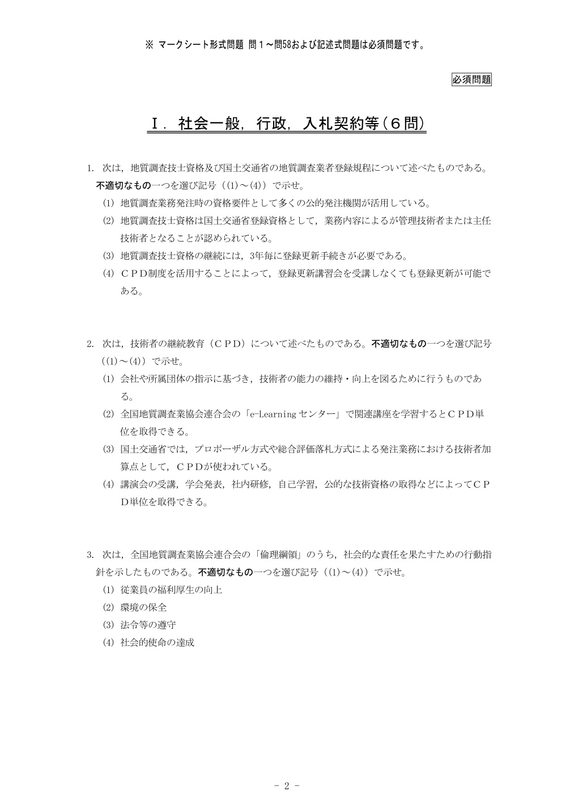
問2
必須
2. 次は，技術者の継続教育（ＣＰＤ）について述べたものである。不適切なもの一つを選び記号
（(1)～(4)）で示せ。
(1) 会社や所属団体の指示に基づき，技術者の能力の維持・向上を図るために行うものであ
る。
(2) 全国地質調査業協会連合会の「e-Learning センター」で関連講座を学習するとＣＰＤ単
位を取得できる。
(3) 国土交通省では，プロポーザル方式や総合評価落札方式による発注業務における技術者加
算点として，ＣＰＤが使われている。
(4) 講演会の受講，学会発表，社内研修，自己学習，公的な技術資格の取得などによってＣＰ
Ｄ単位を取得できる。
図表・イラスト確認用：PDF紙面（2ページ）を表示
問3
必須
3. 次は，全国地質調査業協会連合会の「倫理綱領」のうち，社会的な責任を果たすための行動指
針を示したものである。不適切なもの一つを選び記号（(1)～(4)）で示せ。
(1) 従業員の福利厚生の向上
(2) 環境の保全
(3) 法令等の遵守
(4) 社会的使命の達成
- 3 -
図表・イラスト確認用：PDF紙面（2ページ）を表示
問4
必須
4. 次は，「国土地盤情報データベース」について述べたものである。不適切なもの一つを選び記
号（(1)～(4)）で示せ。
(1) 地盤情報の検定とは，検定に関する技術を有する「第三者機関」が，地質・土質調査で得
られる地盤情報の成果の内容を確認する制度のことである。
(2) 検定および登録の対象となる地盤情報は，「ボーリング柱状図」，「土質試験結果一覧
表」，「原位置試験結果データ」である。
(3) 検定および登録に要する費用は，業務費用として積算に見込まれている。
(4) 一般財団法人国土地盤情報センターは，検定を行う第三者機関として国土交通省から認定
されている。
図表・イラスト確認用：PDF紙面（3ページ）を表示
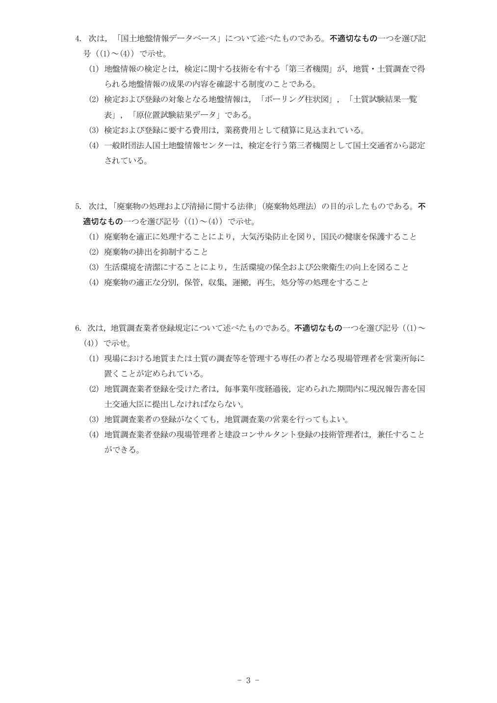
問5
必須
5. 次は，「廃棄物の処理および清掃に関する法律」（廃棄物処理法）の目的示したものである。不
適切なもの一つを選び記号（(1)～(4)）で示せ。
(1) 廃棄物を適正に処理することにより，大気汚染防止を図り，国民の健康を保護すること
(2) 廃棄物の排出を抑制すること
(3) 生活環境を清潔にすることにより，生活環境の保全および公衆衛生の向上を図ること
(4) 廃棄物の適正な分別，保管，収集，運搬，再生，処分等の処理をすること
図表・イラスト確認用：PDF紙面（3ページ）を表示
問6
必須
6. 次は，地質調査業者登録規定について述べたものである。不適切なもの一つを選び記号（(1)～
(4)）で示せ。
(1) 現場における地質または土質の調査等を管理する専任の者となる現場管理者を営業所毎に
置くことが定められている。
(2) 地質調査業者登録を受けた者は，毎事業年度経過後，定められた期間内に現況報告書を国
土交通大臣に提出しなければならない。
(3) 地質調査業者の登録がなくても，地質調査業の営業を行ってもよい。
(4) 地質調査業者登録の現場管理者と建設コンサルタント登録の技術管理者は，兼任すること
ができる。
- 4 -
必須問題
Ⅱ．地質，測量，土木，建築等の知識(８問)
図表・イラスト確認用：PDF紙面（3ページ）を表示
問7
必須
7. 次は，表層部に砂や礫などの粗粒堆積物が分布すると想定される地形を示したものである。不
適切なもの一つを選び記号（(1)～(4)）で示せ。
(1) 後背湿地
(2) 河岸段丘
(3) 扇状地
(4) 自然堤防
図表・イラスト確認用：PDF紙面（4ページ）を表示
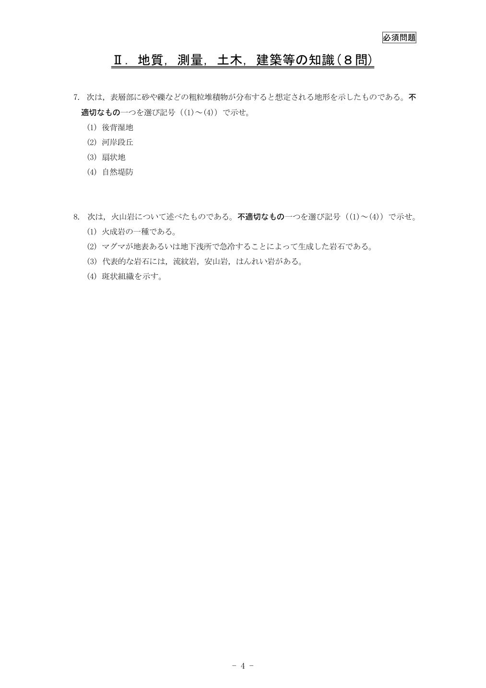
問8
必須
8. 次は，火山岩について述べたものである。不適切なもの一つを選び記号（(1)～(4)）で示せ。
(1) 火成岩の一種である。
(2) マグマが地表あるいは地下浅所で急冷することによって生成した岩石である。
(3) 代表的な岩石には，流紋岩，安山岩，はんれい岩がある。
(4) 斑状組織を示す。
- 5 -
図表・イラスト確認用：PDF紙面（4ページ）を表示
問9
必須
9. 次は，模式的な露頭の状況を示したものである。不適切なもの一つを選び記号（(1)～(4)）で
示せ。
(1) 堆積時代はF 層が一番古く，最も新しいのはA 層である
(2) 断層の形態は逆断層である。
(3) A 層の堆積以前に断層の活動は生じた
(4) アサリのような堆積当時の環境を示す化石を示相化石という
図表・イラスト確認用：PDF紙面（5ページ）を表示
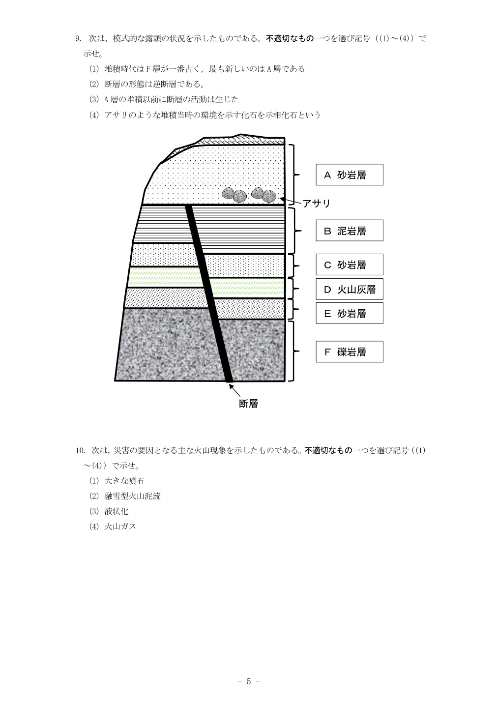
問10
必須
10. 次は，災害の要因となる主な火山現象を示したものである。不適切なもの一つを選び記号（(1)
～(4)）で示せ。
(1) 大きな噴石
(2) 融雪型火山泥流
(3) 液状化
(4) 火山ガス
Ａ 砂岩層
Ｂ 泥岩層
Ｃ 砂岩層
Ｄ 火山灰層
Ｆ 礫岩層
Ｅ 砂岩層
断層
アサリ
- 6 -
図表・イラスト確認用：PDF紙面（5ページ）を表示
問11
必須
11. 次は，測量の基本事項について述べたものである。不適切なもの一つを選び記号（(1)～(4)）
で示せ。
(1) 平面直角座標系では，座標系原点において真北に向う値がＸ軸の正，真東に向う値がＹ軸
の正となっている。
(2) 日本では，東京湾の中等潮位（平均海面：T.P.）が標高の基準であり，日本水準原点の値
を用いることになっている。
(3) 現在使用されている日本水準原点の標高値は，平成23 年東北地方太平洋沖地震の影響を
補正した値である。
(4) 日本国内でGNSS 測量を行う場合には，WGS84 座標系WGS84 楕円体を用いるよう定められ
ている。
図表・イラスト確認用：PDF紙面（6ページ）を表示
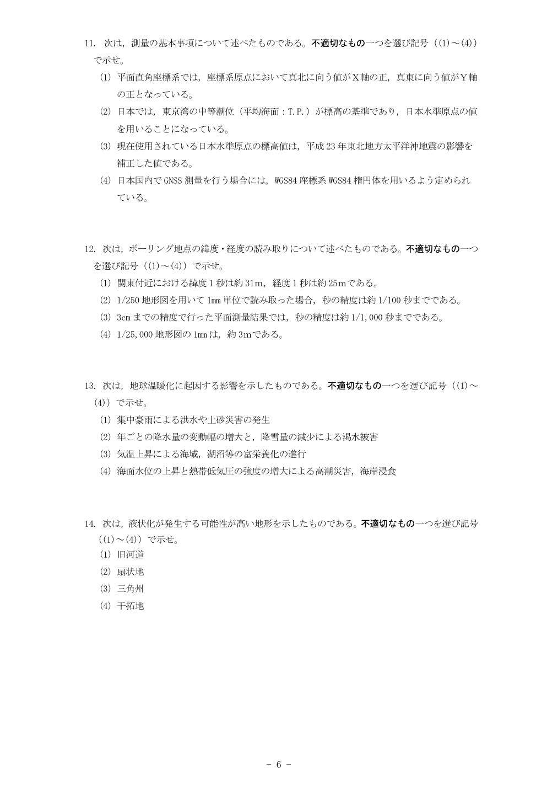
問12
必須
12. 次は，ボーリング地点の緯度・経度の読み取りについて述べたものである。不適切なもの一つ
を選び記号（(1)～(4)）で示せ。
(1) 関東付近における緯度1 秒は約31ｍ，経度1 秒は約25ｍである。
(2) 1/250 地形図を用いて1mm 単位で読み取った場合，秒の精度は約1/100 秒までである。
(3) 3cm までの精度で行った平面測量結果では，秒の精度は約1/1,000 秒までである。
(4) 1/25,000 地形図の1mm は，約3ｍである。
図表・イラスト確認用：PDF紙面（6ページ）を表示
問13
必須
13. 次は，地球温暖化に起因する影響を示したものである。不適切なもの一つを選び記号（(1)～
(4)）で示せ。
(1) 集中豪雨による洪水や土砂災害の発生
(2) 年ごとの降水量の変動幅の増大と，降雪量の減少による渇水被害
(3) 気温上昇による海域，湖沼等の富栄養化の進行
(4) 海面水位の上昇と熱帯低気圧の強度の増大による高潮災害，海岸浸食
図表・イラスト確認用：PDF紙面（6ページ）を表示
問14
必須
14. 次は，液状化が発生する可能性が高い地形を示したものである。不適切なもの一つを選び記号
（(1)～(4)）で示せ。
(1) 旧河道
(2) 扇状地
(3) 三角州
(4) 干拓地
- 7 -
必須問題
Ⅲ．現場技術の知識(３２問)
図表・イラスト確認用：PDF紙面（6ページ）を表示
問15
必須
15. 次は，ボーリングマシンの装置について述べたものである。不適切なもの一つを選び記号
((1)～(4))で示せ。
(1) 伝達装置は原動機からの動力を伝える装置で，動力を入力や遮断できるクラッチを装備し
ている。
(2) 変速装置は原動機の往復運動を一定の回転に変速する装置である。
(3) 巻揚装置はドリルストリングスを揚降するための装置である。
(4) せん孔装置は，ボーリング用ロッドに回転運動と進退(前進・後退)運動を与える装置であ
る。
図表・イラスト確認用：PDF紙面（7ページ）を表示
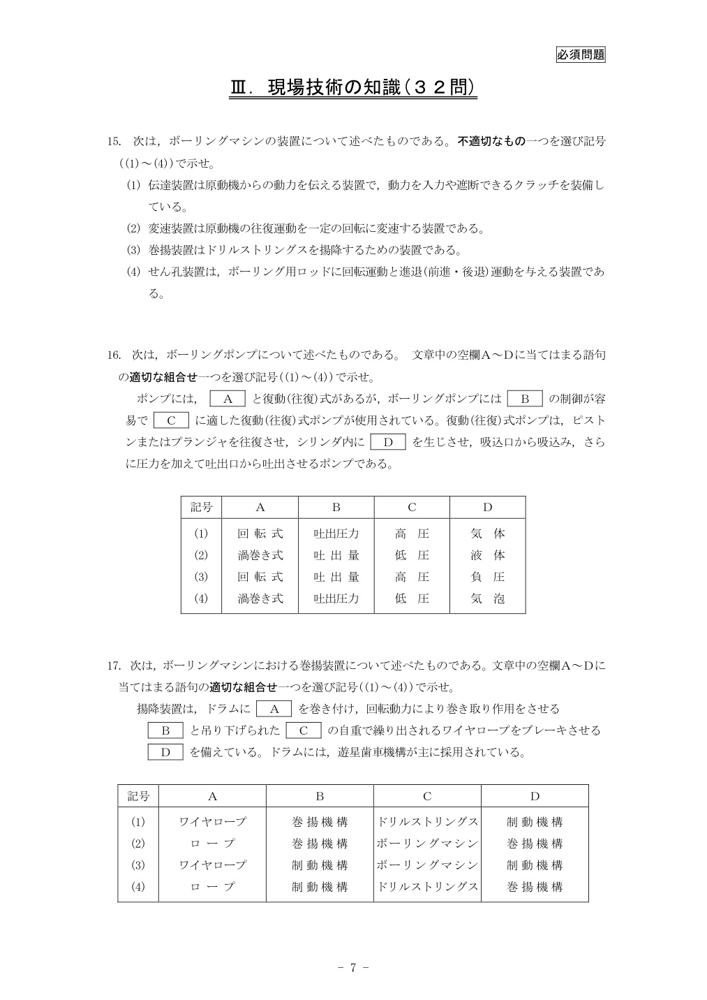
問16
必須
16. 次は，ボーリングポンプについて述べたものである。 文章中の空欄Ａ～Ｄに当てはまる語句
の適切な組合せ一つを選び記号((1)～(4))で示せ。
ポンプには， Ａ と復動(往復)式があるが，ボーリングポンプには Ｂ の制御が容
易で Ｃ に適した復動(往復)式ポンプが使用されている。復動(往復)式ポンプは，ピスト
ンまたはプランジャを往復させ，シリンダ内に Ｄ を生じさせ，吸込口から吸込み，さら
に圧力を加えて吐出口から吐出させるポンプである。
記号
Ａ
Ｂ
Ｃ
Ｄ
(1)
(2)
(3)
(4)
回転式
渦巻き式
回転式
渦巻き式
吐出圧力
吐出量
吐出量
吐出圧力
高 圧
低 圧
高 圧
低 圧
気 体
液 体
負 圧
気 泡
図表・イラスト確認用：PDF紙面（7ページ）を表示
問17
必須
17. 次は，ボーリングマシンにおける巻揚装置について述べたものである。文章中の空欄Ａ～Ｄに
当てはまる語句の適切な組合せ一つを選び記号((1)～(4))で示せ。
揚降装置は，ドラムに Ａ を巻き付け，回転動力により巻き取り作用をさせる
Ｂ と吊り下げられた Ｃ の自重で繰り出されるワイヤロープをブレーキさせる
Ｄ を備えている。ドラムには，遊星歯車機構が主に採用されている。
記号
Ａ
Ｂ
Ｃ
Ｄ
(1)
(2)
(3)
(4)
ワイヤロープ
ロープ
ワイヤロープ
ロープ
巻揚機構
巻揚機構
制動機構
制動機構
ドリルストリングス
ボーリングマシン
ボーリングマシン
ドリルストリングス
制動機構
巻揚機構
制動機構
巻揚機構
- 8 -
図表・イラスト確認用：PDF紙面（7ページ）を表示
問18
必須
18. 次は，復動ピストンポンプのバルブについて述べたものである。不適切なもの一つを選び記号
((1)～(4))で示せ。
(1) バルブは流体を一定方向に通過させ逆流を防ぐ役目をする。
(2) バルブは大きさの違いによって機械的に開閉される。
(3) 圧送流体の性質によりボールバルブかコニカルバルブが選択される。
(4) バルブは一般的に，カバー，バルブ，バルブシートから構成される。
図表・イラスト確認用：PDF紙面（8ページ）を表示
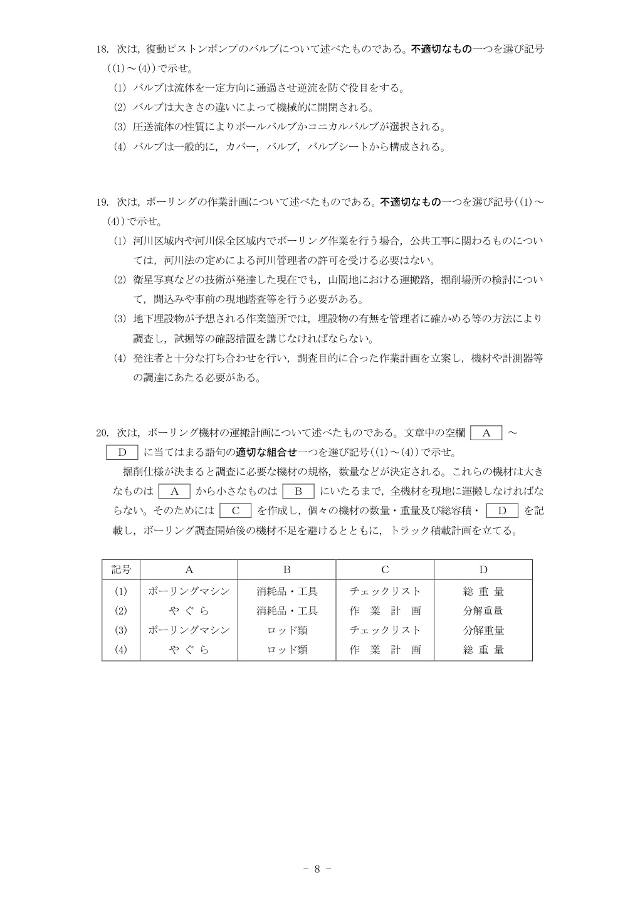
問19
必須
19. 次は，ボーリングの作業計画について述べたものである。不適切なもの一つを選び記号((1)～
(4))で示せ。
(1) 河川区域内や河川保全区域内でボーリング作業を行う場合，公共工事に関わるものについ
ては，河川法の定めによる河川管理者の許可を受ける必要はない。
(2) 衛星写真などの技術が発達した現在でも，山間地における運搬路，掘削場所の検討につい
て，聞込みや事前の現地踏査等を行う必要がある。
(3) 地下埋設物が予想される作業箇所では，埋設物の有無を管理者に確かめる等の方法により
調査し，試掘等の確認措置を講じなければならない。
(4) 発注者と十分な打ち合わせを行い，調査目的に合った作業計画を立案し，機材や計測器等
の調達にあたる必要がある。
図表・イラスト確認用：PDF紙面（8ページ）を表示
問20
必須
20. 次は，ボーリング機材の運搬計画について述べたものである。文章中の空欄 Ａ ～
Ｄ に当てはまる語句の適切な組合せ一つを選び記号((1)～(4))で示せ。
掘削仕様が決まると調査に必要な機材の規格，数量などが決定される。これらの機材は大き
なものは Ａ から小さなものは Ｂ にいたるまで，全機材を現地に運搬しなければな
らない。そのためには Ｃ を作成し，個々の機材の数量・重量及び総容積・ Ｄ を記
載し，ボーリング調査開始後の機材不足を避けるとともに，トラック積載計画を立てる。
記号
Ａ
Ｂ
Ｃ
Ｄ
(1)
(2)
(3)
(4)
ボーリングマシン
やぐら
ボーリングマシン
やぐら
消耗品・工具
消耗品・工具
ロッド類
ロッド類
チェックリスト
作 業 計 画
チェックリスト
作 業 計 画
総重量
分解重量
分解重量
総重量
- 9 -
図表・イラスト確認用：PDF紙面（8ページ）を表示
問21
必須
21. 次は，ボーリング機材の運搬方法とその特徴について述べたものである。不適切なもの一つを
選び記号((1)～(4))で示せ。
図表・イラスト確認用：PDF紙面（9ページ）を表示
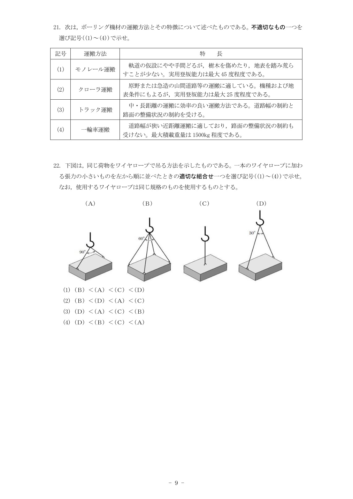
問22
必須
22. 下図は，同じ荷物をワイヤロープで吊る方法を示したものである。一本のワイヤロープに加わ
る張力の小さいものを左から順に並べたときの適切な組合せ一つを選び記号((1)～(4))で示せ。
なお，使用するワイヤロープは同じ規格のものを使用するものとする。
(Ａ) (Ｂ) (Ｃ) (Ｄ)
(1) (Ｂ) ＜(Ａ) ＜(Ｃ) ＜(Ｄ)
(2) (Ｂ) ＜(Ｄ) ＜(Ａ) ＜(Ｃ)
(3) (Ｄ) ＜(Ａ) ＜(Ｃ) ＜(Ｂ)
(4) (Ｄ) ＜(Ｂ) ＜(Ｃ) ＜(Ａ)
記号
運搬方法
特 長
（1） モノレール運搬
軌道の仮設にやや手間どるが，樹木を傷めたり，地表を踏み荒ら
すことが少ない。実用登坂能力は最大45 度程度である。
（2）
クローラ運搬
原野または急造の山間道路等の運搬に適している。機種および地
表条件にもよるが，実用登坂能力は最大25 度程度である。
（3）
トラック運搬
中・長距離の運搬に効率の良い運搬方法である。道路幅の制約と
路面の整備状況の制約を受ける。
（4）
一輪車運搬
道路幅が狭い近距離運搬に適しており，路面の整備状況の制約も
受けない。最大積載重量は1500kg 程度である。
- 10 -
図表・イラスト確認用：PDF紙面（9ページ）を表示
問23
必須
23. 次は，水上ボーリングで使用される足場について述べたものである。不適切なもの一つを選び
記号((1)～(4))で示せ。
図表・イラスト確認用：PDF紙面（10ページ）を表示
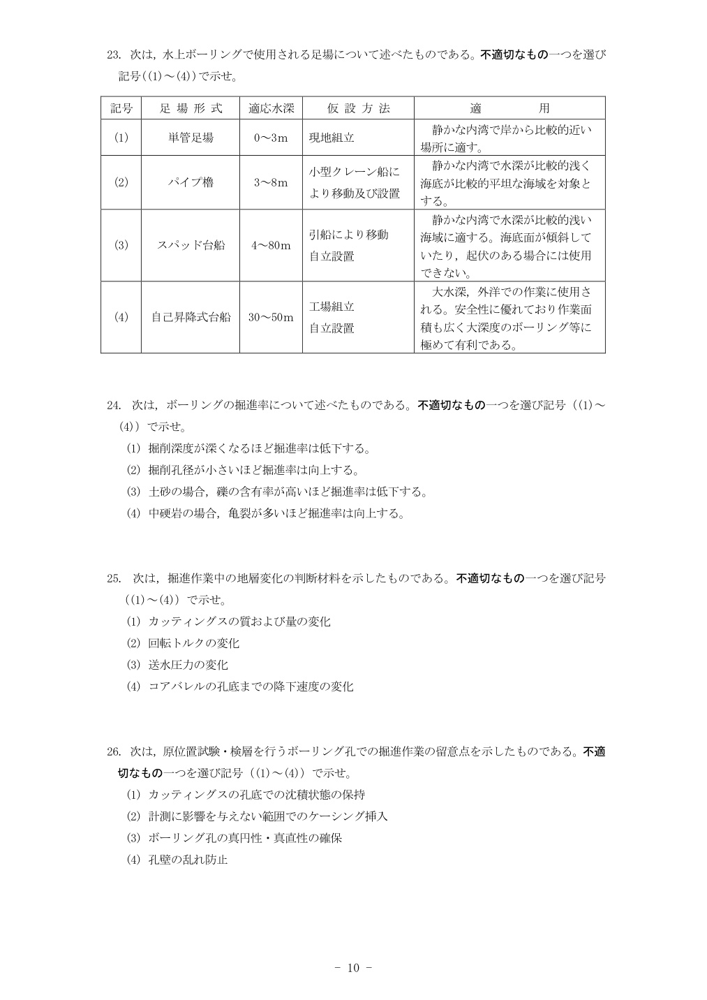
問24
必須
24. 次は，ボーリングの掘進率について述べたものである。不適切なもの一つを選び記号（(1)～
(4)）で示せ。
(1) 掘削深度が深くなるほど掘進率は低下する。
(2) 掘削孔径が小さいほど掘進率は向上する。
(3) 土砂の場合，礫の含有率が高いほど掘進率は低下する。
(4) 中硬岩の場合，亀裂が多いほど掘進率は向上する。
図表・イラスト確認用：PDF紙面（10ページ）を表示
問25
必須
25. 次は，掘進作業中の地層変化の判断材料を示したものである。不適切なもの一つを選び記号
（(1)～(4)）で示せ。
(1) カッティングスの質および量の変化
(2) 回転トルクの変化
(3) 送水圧力の変化
(4) コアバレルの孔底までの降下速度の変化
図表・イラスト確認用：PDF紙面（10ページ）を表示
問26
必須
26. 次は，原位置試験・検層を行うボーリング孔での掘進作業の留意点を示したものである。不適
切なもの一つを選び記号（(1)～(4)）で示せ。
(1) カッティングスの孔底での沈積状態の保持
(2) 計測に影響を与えない範囲でのケーシング挿入
(3) ボーリング孔の真円性・真直性の確保
(4) 孔壁の乱れ防止
記号
足 場 形 式
適応水深
仮 設 方 法
適 用
（1）
単管足場
0～3ｍ
現地組立
静かな内湾で岸から比較的近い
場所に適す。
（2）
パイプ櫓
3～8ｍ
小型クレーン船に
より移動及び設置
静かな内湾で水深が比較的浅く
海底が比較的平坦な海域を対象と
する。
（3）
スパッド台船
4～80ｍ
引船により移動
自立設置
静かな内湾で水深が比較的浅い
海域に適する。海底面が傾斜して
いたり，起伏のある場合には使用
できない。
（4） 自己昇降式台船
30～50ｍ
工場組立
自立設置
大水深，外洋での作業に使用さ
れる。安全性に優れており作業面
積も広く大深度のボーリング等に
極めて有利である。
- 11 -
図表・イラスト確認用：PDF紙面（10ページ）を表示
問27
必須
27. 次は，ロータリー式スリーブ内蔵二重管サンプラーによるコア採取について述べたものであ
る。適切なもの一つを選び記号（(1)～(4)）で示せ。
(1) 未固結層でのコア採取に適し，軟岩や中硬岩でのコア採取には不向きである。
(2) 未固結層でのコア採取には，ダイヤモンドビットの使用が一般的である。
(3) コア詰りの兆候があれば，残尺を測定した上で速やかにサンプラーを引き揚げる。
(4) サンプラー引き揚げ時のコア試料の脱落は，コアキャッチャーによって100％防止でき
る。
図表・イラスト確認用：PDF紙面（11ページ）を表示
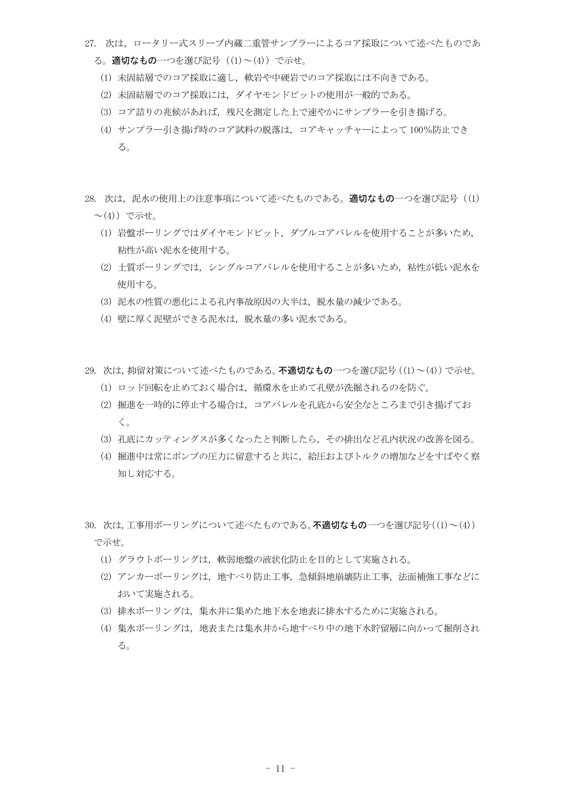
問28
必須
28. 次は，泥水の使用上の注意事項について述べたものである。適切なもの一つを選び記号（(1)
～(4)）で示せ。
(1) 岩盤ボーリングではダイヤモンドビット，ダブルコアバレルを使用することが多いため，
粘性が高い泥水を使用する。
(2) 土質ボーリングでは，シングルコアバレルを使用することが多いため，粘性が低い泥水を
使用する。
(3) 泥水の性質の悪化による孔内事故原因の大半は，脱水量の減少である。
(4) 壁に厚く泥壁ができる泥水は，脱水量の多い泥水である。
図表・イラスト確認用：PDF紙面（11ページ）を表示
問29
必須
29. 次は，抑留対策について述べたものである。不適切なもの一つを選び記号（(1)～(4)）で示せ。
(1) ロッド回転を止めておく場合は，循環水を止めて孔壁が洗掘されるのを防ぐ。
(2) 掘進を一時的に停止する場合は，コアバレルを孔底から安全なところまで引き揚げてお
く。
(3) 孔底にカッティングスが多くなったと判断したら，その排出など孔内状況の改善を図る。
(4) 掘進中は常にポンプの圧力に留意すると共に，給圧およびトルクの増加などをすばやく察
知し対応する。
図表・イラスト確認用：PDF紙面（11ページ）を表示
問30
必須
30. 次は，工事用ボーリングについて述べたものである。不適切なもの一つを選び記号（(1)～(4)）
で示せ。
(1) グラウトボーリングは，軟弱地盤の液状化防止を目的として実施される。
(2) アンカーボーリングは，地すべり防止工事，急傾斜地崩壊防止工事，法面補強工事などに
おいて実施される。
(3) 排水ボーリングは，集水井に集めた地下水を地表に排水するために実施される。
(4) 集水ボーリングは，地表または集水井から地すべり中の地下水貯留層に向かって掘削され
る。
- 12 -
図表・イラスト確認用：PDF紙面（11ページ）を表示
問31
必須
31. 次は，様々な計器設置ボーリングや計器の特徴について述べたものである。不適切なもの一つ
を選び記号（(1)～(4)）で示せ。
(1) 孔壁アンカ方式沈下計は任意の地層の沈下量を測定するものである。
(2) pH や電気伝導度などの自動計測を行う水質測定器は市販されていない。
(3) 固定式傾斜計は深度方向に計器を複数設置し連続的に水平変位を計測する。
(4) 多段式地下水観測孔は多深度の地下水位が測定でき，自動計測も可能である。
図表・イラスト確認用：PDF紙面（12ページ）を表示
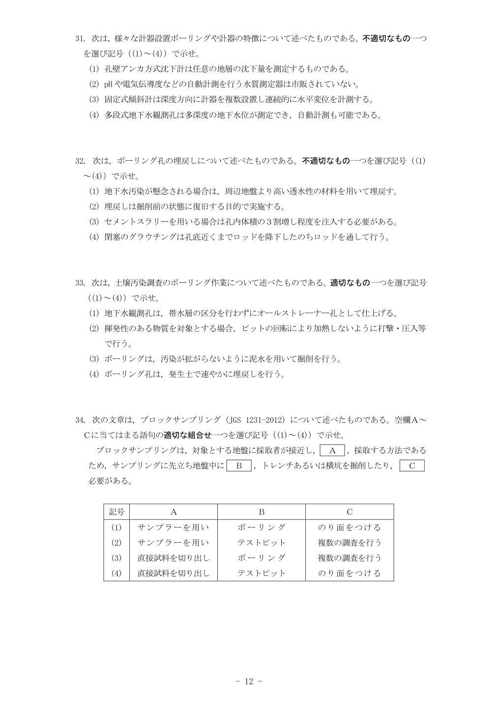
問32
必須
32. 次は，ボーリング孔の埋戻しについて述べたものである。不適切なもの一つを選び記号（(1)
～(4)）で示せ。
(1) 地下水汚染が懸念される場合は，周辺地盤より高い透水性の材料を用いて埋戻す。
(2) 埋戻しは掘削前の状態に復旧する目的で実施する。
(3) セメントスラリーを用いる場合は孔内体積の３割増し程度を注入する必要がある。
(4) 閉塞のグラウチングは孔底近くまでロッドを降下したのちロッドを通して行う。
図表・イラスト確認用：PDF紙面（12ページ）を表示
問33
必須
33. 次は，土壌汚染調査のボーリング作業について述べたものである。適切なもの一つを選び記号
（(1)～(4)）で示せ。
(1) 地下水観測孔は，帯水層の区分を行わずにオールストレーナー孔として仕上げる。
(2) 揮発性のある物質を対象とする場合，ビットの回転により加熱しないように打撃・圧入等
で行う。
(3) ボーリングは，汚染が拡がらないように泥水を用いて掘削を行う。
(4) ボーリング孔は，発生土で速やかに埋戻しを行う。
図表・イラスト確認用：PDF紙面（12ページ）を表示
問34
必須
34. 次の文章は，ブロックサンプリング（JGS 1231-2012）について述べたものである。空欄Ａ～
Ｃに当てはまる語句の適切な組合せ一つを選び記号（(1)～(4)）で示せ。
ブロックサンプリングは，対象とする地盤に採取者が接近し， Ａ ，採取する方法である
ため，サンプリングに先立ち地盤中に Ｂ ，トレンチあるいは横坑を掘削したり， Ｃ
必要がある。
記号
Ａ
Ｂ
Ｃ
(1)
(2)
(3)
(4)
サンプラーを用い
サンプラーを用い
直接試料を切り出し
直接試料を切り出し
ボーリング
テストピット
ボーリング
テストピット
のり面をつける
複数の調査を行う
複数の調査を行う
のり面をつける
- 13 -
図表・イラスト確認用：PDF紙面（12ページ）を表示
問35
必須
35. 次は，標準貫入試験（JIS A 1219:2013）の打撃装置が満たさなければならない条件について
述べたものである。不適切なもの一つを選び記号（(1)～(4)）で示せ。
(1) ハンマーの落下高さは 760mm±30mm とする。
(2) 鋼製ハンマーの質量は 63.5kg±0.5kg とする。
(3) 全体の質量は 115kg 以下とする。
(4) アンビルはロッドと緩みが生じないようにきつく締め付ける。
図表・イラスト確認用：PDF紙面（13ページ）を表示
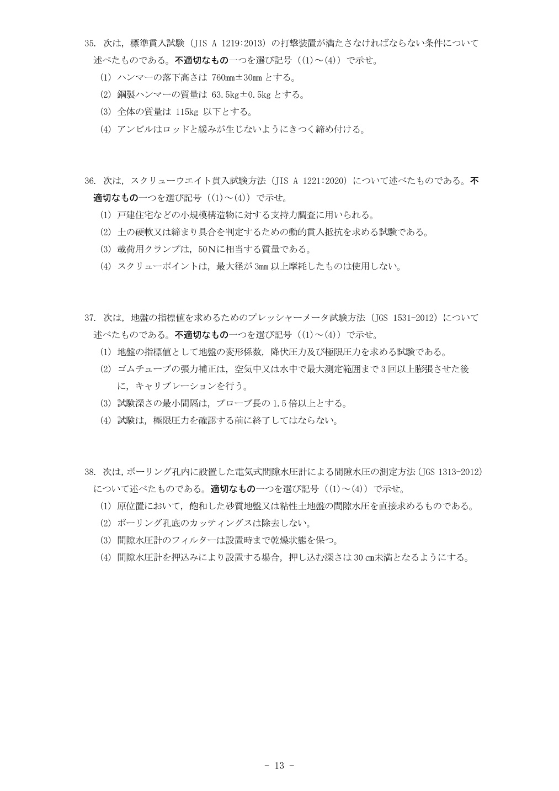
問36
必須
36. 次は，スクリューウエイト貫入試験方法（JIS A 1221:2020）について述べたものである。不
適切なもの一つを選び記号（(1)～(4)）で示せ。
(1) 戸建住宅などの小規模構造物に対する支持力調査に用いられる。
(2) 土の硬軟又は締まり具合を判定するための動的貫入抵抗を求める試験である。
(3) 載荷用クランプは，50Ｎに相当する質量である。
(4) スクリューポイントは，最大径が3mm 以上摩耗したものは使用しない。
図表・イラスト確認用：PDF紙面（13ページ）を表示
問37
必須
37. 次は，地盤の指標値を求めるためのプレッシャーメータ試験方法（JGS 1531-2012）について
述べたものである。不適切なもの一つを選び記号（(1)～(4)）で示せ。
(1) 地盤の指標値として地盤の変形係数，降伏圧力及び極限圧力を求める試験である。
(2) ゴムチューブの張力補正は，空気中又は水中で最大測定範囲まで3 回以上膨張させた後
に，キャリブレーションを行う。
(3) 試験深さの最小間隔は，プローブ長の1.5 倍以上とする。
(4) 試験は，極限圧力を確認する前に終了してはならない。
図表・イラスト確認用：PDF紙面（13ページ）を表示
問38
必須
38. 次は，ボーリング孔内に設置した電気式間隙水圧計による間隙水圧の測定方法（JGS 1313-2012）
について述べたものである。適切なもの一つを選び記号（(1)～(4)）で示せ。
(1) 原位置において，飽和した砂質地盤又は粘性土地盤の間隙水圧を直接求めるものである。
(2) ボーリング孔底のカッティングスは除去しない。
(3) 間隙水圧計のフィルターは設置時まで乾燥状態を保つ。
(4) 間隙水圧計を押込みにより設置する場合，押し込む深さは30 ㎝未満となるようにする。
- 14 -
図表・イラスト確認用：PDF紙面（13ページ）を表示
問39
必須
39. 次は，地盤の透水性に関する試験法の適用範囲を示したものである。不適切な組合せ一つを選
び記号（(1)～(4)）で示せ。
記号
試験法
適用範囲
対象地盤
飽和・不飽和
定常・非定常
未固結
岩盤
飽和
不飽和
定常
非定常
(1)
単孔を利用した透水試
験方法
（JGS 1314-2012）
〇
×
〇
×
〇
〇
(2)
揚水試験方法
（JGS 1315-2012）
〇
△
〇
×
〇
〇
(3)
孔内水位回復法による
岩盤の透水試験方法
（JGS 1321-2012）
×
〇
×
〇
×
〇
(4)
注水による岩盤の透水
試験方法
（JGS 1322-2012）
×
〇
〇
×
〇
×
〇：用いられる △：用いられる場合がある ×：一般には適用しない
図表・イラスト確認用：PDF紙面（14ページ）を表示
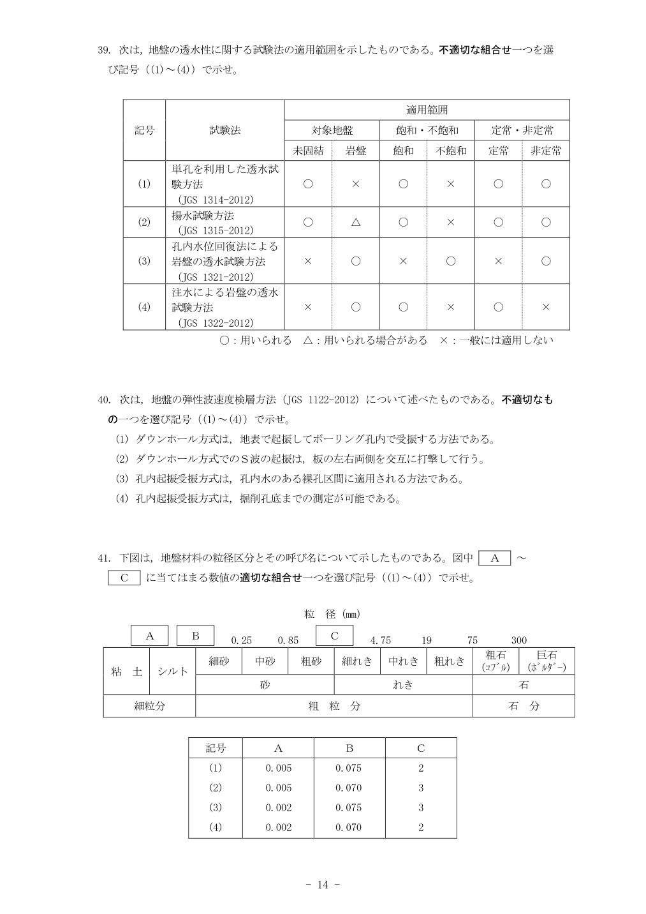
問40
必須
40. 次は，地盤の弾性波速度検層方法（JGS 1122-2012）について述べたものである。不適切なも
の一つを選び記号（(1)～(4)）で示せ。
(1) ダウンホール方式は，地表で起振してボーリング孔内で受振する方法である。
(2) ダウンホール方式でのＳ波の起振は，板の左右両側を交互に打撃して行う。
(3) 孔内起振受振方式は，孔内水のある裸孔区間に適用される方法である。
(4) 孔内起振受振方式は，掘削孔底までの測定が可能である。
図表・イラスト確認用：PDF紙面（14ページ）を表示
問41
必須
41. 下図は，地盤材料の粒径区分とその呼び名について示したものである。図中 Ａ ～
Ｃ に当てはまる数値の適切な組合せ一つを選び記号（(1)～(4)）で示せ。
粘 土
シルト
細砂
中砂
粗砂
細れき
中れき
粗れき
粗石
(ｺﾌﾞﾙ)
巨石
(ﾎﾞﾙﾀﾞ-)
砂
れき
石
細粒分
粗 粒 分
石 分
記号
Ａ
Ｂ
Ｃ
(1)
(2)
(3)
(4)
0.005
0.005
0.002
0.002
0.075
0.070
0.075
0.070
2
3
3
2
0.075
0.25
0.85
2
4.75
19
粒 径（mm）
75
300
Ｂ
Ｃ
0.005
Ａ
- 15 -
図表・イラスト確認用：PDF紙面（14ページ）を表示
問42
必須
42. 次は，自然由来の重金属等について述べたものである。適切なもの一つを選び記号（(1)～(4)）
で示せ。
(1) ひ素は熱水性の金属鉱床に高い濃度で含まれるが，海成細粒堆積岩中には含まれない。
(2) ふっ素は海成細粒堆積岩に含有されることが多いが，土壌含有量基準を超過する例は少な
い。
(3) シアンは超塩基性岩体（かんらん岩・蛇紋岩体）に多く含まれる。
(4) ほう素は河川水，湖水に多く含まれる。
図表・イラスト確認用：PDF紙面（15ページ）を表示
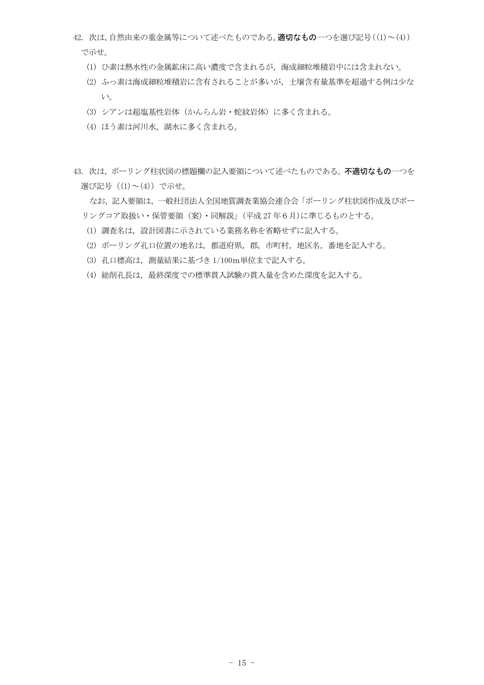
問43
必須
43. 次は，ボーリング柱状図の標題欄の記入要領について述べたものである。不適切なもの一つを
選び記号（（1)～(4））で示せ。
なお，記入要領は，一般社団法人全国地質調査業協会連合会「ボーリング柱状図作成及びボー
リングコア取扱い・保管要領（案）・同解説」(平成27 年６月)に準じるものとする。
(1) 調査名は，設計図書に示されている業務名称を省略せずに記入する。
(2) ボーリング孔口位置の地名は，都道府県，郡，市町村，地区名，番地を記入する。
(3) 孔口標高は，測量結果に基づき1/100ｍ単位まで記入する。
(4) 総削孔長は，最終深度での標準貫入試験の貫入量を含めた深度を記入する。
- 16 -
図表・イラスト確認用：PDF紙面（15ページ）を表示
問44
必須
44. 次は，一軸圧縮強さの野外判定法を示したものである。適切なもの一つを選び記号（(1)～(4)）
で示せ。
図表・イラスト確認用：PDF紙面（16ページ）を表示
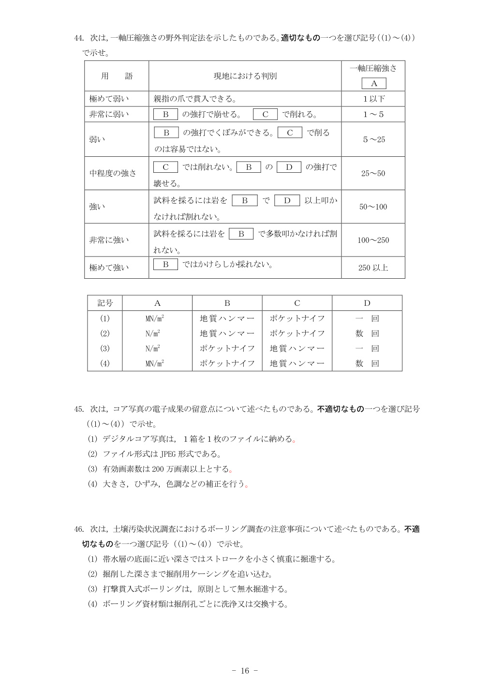
問45
必須
45. 次は，コア写真の電子成果の留意点について述べたものである。不適切なもの一つを選び記号
（(1)～(4)）で示せ。
(1) デジタルコア写真は，１箱を１枚のファイルに納める。
(2) ファイル形式はJPEG 形式である。
(3) 有効画素数は200 万画素以上とする。
(4) 大きさ，ひずみ，色調などの補正を行う。
図表・イラスト確認用：PDF紙面（16ページ）を表示
問46
必須
46. 次は，土壌汚染状況調査におけるボーリング調査の注意事項について述べたものである。不適
切なものを一つ選び記号（(1)～(4)）で示せ。
(1) 帯水層の底面に近い深さではストロークを小さく慎重に掘進する。
(2) 掘削した深さまで掘削用ケーシングを追い込む。
(3) 打撃貫入式ボーリングは，原則として無水掘進する。
(4) ボーリング資材類は掘削孔ごとに洗浄又は交換する。
用 語
現地における判別
一軸圧縮強さ
Ａ
極めて弱い
親指の爪で貫入できる。
１以下
非常に弱い
Ｂ の強打で崩せる。 Ｃ で削れる。
１～５
弱い
Ｂ の強打でくぼみができる。 Ｃ で削る
のは容易ではない。
５～25
中程度の強さ
Ｃ では削れない。 Ｂ の Ｄ の強打で
壊せる。
25～50
強い
試料を採るには岩を Ｂ で Ｄ 以上叩か
なければ割れない。
50～100
非常に強い
試料を採るには岩を Ｂ で多数叩かなければ割
れない。
100～250
極めて強い
Ｂ ではかけらしか採れない。
250 以上
記号
Ａ
Ｂ
Ｃ
Ｄ
(1)
(2)
(3)
(4)
MN/m2
N/m2
N/m2
MN/m2
地質ハンマー
地質ハンマー
ポケットナイフ
ポケットナイフ
ポケットナイフ
ポケットナイフ
地質ハンマー
地質ハンマー
一 回
数 回
一 回
数 回
- 17 -
必須問題
Ⅳ．調査技術の理解度(４問)
図表・イラスト確認用：PDF紙面（16ページ）を表示
問47
必須
47. 次は，屈折法地震探査（弾性波探査）について述べたものである。不適切なもの一つを選び記
号（(1)～(4)）で示せ。
(1) 探査測線は，直線とするのが原則である。
(2) 幅の狭い断層破砕帯は検出できない。
(3) 硬軟，割れ目の程度，風化変質帯などの分布状況との関連付けが可能である。
(4) 起振点から発し，地層境界で反射してくる弾性波を使って解析する。
図表・イラスト確認用：PDF紙面（17ページ）を表示
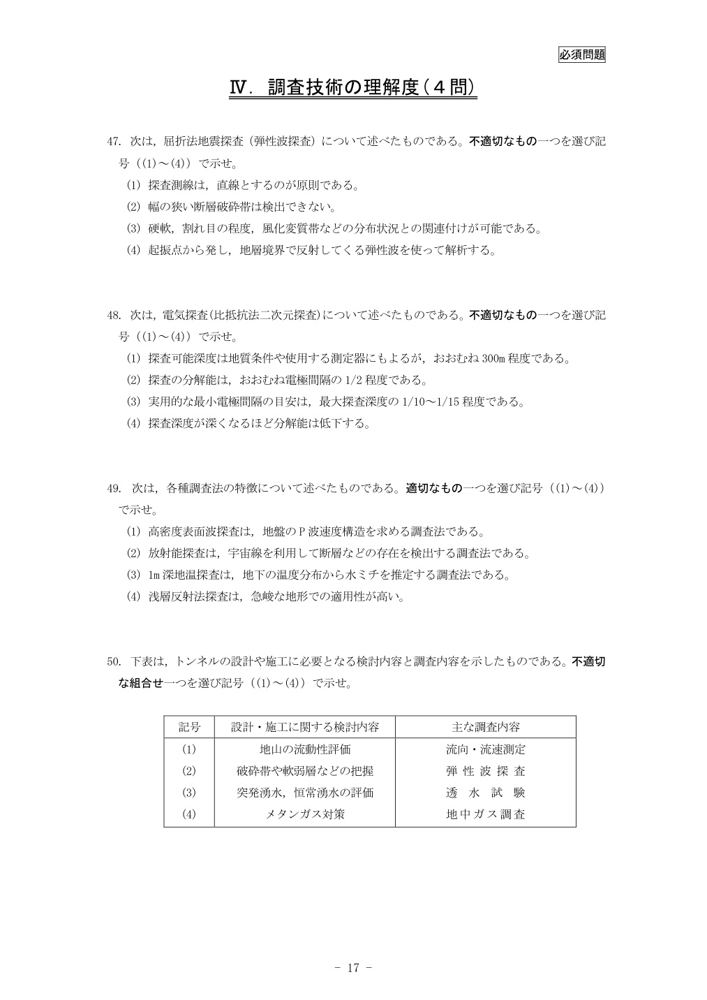
問48
必須
48. 次は，電気探査(比抵抗法二次元探査)について述べたものである。不適切なもの一つを選び記
号（(1)～(4)）で示せ。
(1) 探査可能深度は地質条件や使用する測定器にもよるが，おおむね300m 程度である。
(2) 探査の分解能は，おおむね電極間隔の1/2 程度である。
(3) 実用的な最小電極間隔の目安は，最大探査深度の1/10～1/15 程度である。
(4) 探査深度が深くなるほど分解能は低下する。
図表・イラスト確認用：PDF紙面（17ページ）を表示
問49
必須
49. 次は，各種調査法の特徴について述べたものである。適切なもの一つを選び記号（(1)～(4)）
で示せ。
(1) 高密度表面波探査は，地盤のP 波速度構造を求める調査法である。
(2) 放射能探査は，宇宙線を利用して断層などの存在を検出する調査法である。
(3) 1m 深地温探査は，地下の温度分布から水ミチを推定する調査法である。
(4) 浅層反射法探査は，急峻な地形での適用性が高い。
図表・イラスト確認用：PDF紙面（17ページ）を表示
問50
必須
50. 下表は，トンネルの設計や施工に必要となる検討内容と調査内容を示したものである。不適切
な組合せ一つを選び記号（(1)～(4)）で示せ。
記号
設計・施工に関する検討内容
主な調査内容
(1)
(2)
(3)
(4)
地山の流動性評価
破砕帯や軟弱層などの把握
突発湧水，恒常湧水の評価
メタンガス対策
流向・流速測定
弾性波探査
透
水
試
験
地中ガス調査
- 18 -
必須問題
Ⅴ．管理技法(８問)
図表・イラスト確認用：PDF紙面（17ページ）を表示
問51
必須
51. 次は，労働安全衛生規則による作業主任者を選任しなければならない作業を示したものであ
る。不適切なものを一つ選び記号（(1)～(4)）で示せ。
(1) 土止め支保工の切りばり，腹おこしの取付け又は取りはずしの作業
(2) ボーリングマシンの運転
(3) つり足場，張出足場又は高さが５ｍ以上の足場の組立，解体，変更等の作業
(4) アセチレン溶接装置又はガス集合溶接装置を用いて行う金属の溶接，溶断，加熱業務
図表・イラスト確認用：PDF紙面（18ページ）を表示
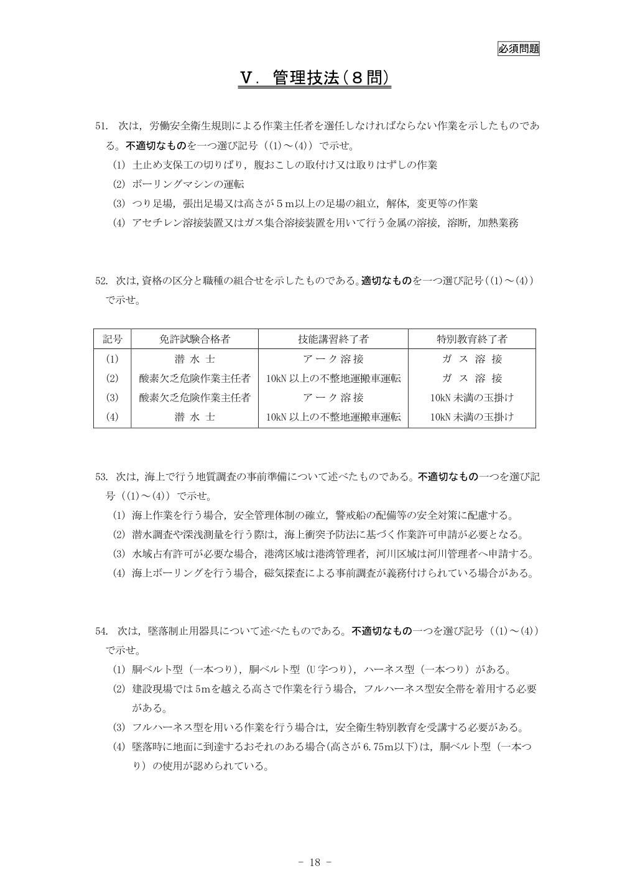
問52
必須
52. 次は，資格の区分と職種の組合せを示したものである。適切なものを一つ選び記号（(1)～(4)）
で示せ。
記号
免許試験合格者
技能講習終了者
特別教育終了者
(1)
(2)
(3)
(4)
潜水士
酸素欠乏危険作業主任者
酸素欠乏危険作業主任者
潜水士
アーク溶接
10kN 以上の不整地運搬車運転
アーク溶接
10kN 以上の不整地運搬車運転
ガス溶接
ガス溶接
10kN 未満の玉掛け
10kN 未満の玉掛け
図表・イラスト確認用：PDF紙面（18ページ）を表示
問53
必須
53. 次は，海上で行う地質調査の事前準備について述べたものである。不適切なもの一つを選び記
号（(1)～(4)）で示せ。
(1) 海上作業を行う場合，安全管理体制の確立，警戒船の配備等の安全対策に配慮する。
(2) 潜水調査や深浅測量を行う際は，海上衝突予防法に基づく作業許可申請が必要となる。
(3) 水域占有許可が必要な場合，港湾区域は港湾管理者，河川区域は河川管理者へ申請する。
(4) 海上ボーリングを行う場合，磁気探査による事前調査が義務付けられている場合がある。
図表・イラスト確認用：PDF紙面（18ページ）を表示
問54
必須
54. 次は，墜落制止用器具について述べたものである。不適切なもの一つを選び記号（(1)～(4)）
で示せ。
(1) 胴ベルト型（一本つり），胴ベルト型（U 字つり），ハーネス型（一本つり）がある。
(2) 建設現場では5ｍを越える高さで作業を行う場合，フルハーネス型安全帯を着用する必要
がある。
(3) フルハーネス型を用いる作業を行う場合は，安全衛生特別教育を受講する必要がある。
(4) 墜落時に地面に到達するおそれのある場合(高さが6.75ｍ以下)は，胴ベルト型（一本つ
り）の使用が認められている。
- 19 -
図表・イラスト確認用：PDF紙面（18ページ）を表示
問55
必須
55. 次は，土壌汚染調査時の安全対策について述べたものである。不適切なものを一つ選び記号
（(1)～(4)）で示せ。
(1) 調査対象物質の特徴や有害性について把握し作業者に周知する。
(2) 土壌の観察や採取は，手袋を着用して行う。
(3) 粉じんが生じている場所では，不織布マスクを着用して作業を行う。
(4) タイベックスーツ着用や長靴の洗浄など，汚染状況に応じた拡散防止対策を行う。
図表・イラスト確認用：PDF紙面（19ページ）を表示
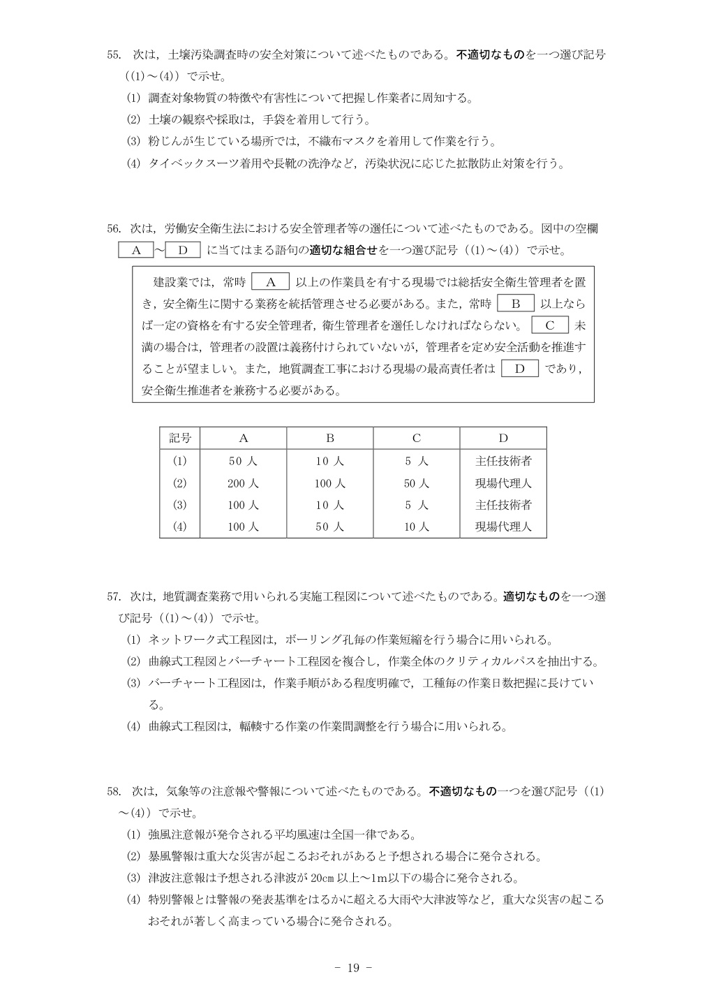
問56
必須
56. 次は，労働安全衛生法における安全管理者等の選任について述べたものである。図中の空欄
Ａ ～ Ｄ に当てはまる語句の適切な組合せを一つ選び記号（(1)～(4)）で示せ。
図表・イラスト確認用：PDF紙面（19ページ）を表示
問57
必須
57. 次は，地質調査業務で用いられる実施工程図について述べたものである。適切なものを一つ選
び記号（(1)～(4)）で示せ。
(1) ネットワーク式工程図は，ボーリング孔毎の作業短縮を行う場合に用いられる。
(2) 曲線式工程図とバーチャート工程図を複合し，作業全体のクリティカルパスを抽出する。
(3) バーチャート工程図は，作業手順がある程度明確で，工種毎の作業日数把握に長けてい
る。
(4) 曲線式工程図は，輻輳する作業の作業間調整を行う場合に用いられる。
図表・イラスト確認用：PDF紙面（19ページ）を表示
問58
必須
58. 次は，気象等の注意報や警報について述べたものである。不適切なもの一つを選び記号（(1)
～(4)）で示せ。
(1) 強風注意報が発令される平均風速は全国一律である。
(2) 暴風警報は重大な災害が起こるおそれがあると予想される場合に発令される。
(3) 津波注意報は予想される津波が20cm 以上～1ｍ以下の場合に発令される。
(4) 特別警報とは警報の発表基準をはるかに超える大雨や大津波等など，重大な災害の起こる
おそれが著しく高まっている場合に発令される。
記号
Ａ
Ｂ
Ｃ
Ｄ
(1)
(2)
(3)
(4)
50 人
200 人
100 人
100 人
10 人
100 人
10 人
50 人
5 人
50 人
5 人
10 人
主任技術者
現場代理人
主任技術者
現場代理人
建設業では，常時 Ａ 以上の作業員を有する現場では総括安全衛生管理者を置
き，安全衛生に関する業務を統括管理させる必要がある。また，常時 Ｂ 以上なら
ば一定の資格を有する安全管理者，衛生管理者を選任しなければならない。 Ｃ 未
満の場合は，管理者の設置は義務付けられていないが，管理者を定め安全活動を推進す
ることが望ましい。また，地質調査工事における現場の最高責任者は Ｄ であり，
安全衛生推進者を兼務する必要がある。
- 20 -
選択問題
Ⅵ．選 択 問 題
問59から問102は，選択問題である。
以下のＡ群またはＢ群のいずれか一方を任意選択の上，解答すること。
選択問題Ａ群： 22 問（主に土質に関連した分野；問59～問80）
選択問題Ｂ群： 22 問（主に岩盤に関連した分野；問81～問102）
※Ａ群，Ｂ群の選択は，受験願書で選択記載した主な調査対象「土質」，「岩盤」のい
ずれかに関わらず，任意で選択することができる。
※Ａ群およびＢ群の両方を解答している場合，選択問題の採点は行わない。
解答用紙への記入の際は，注意して記入すること。
- 21 -
選択問題 Ａ群
選択問題Ａ群：22問（主に土質に関連した分野；問59～問80）
図表・イラスト確認用：PDF紙面（19ページ）を表示
問59
A群（土質）
59. 次は，ボーリングツールスのメタルビットについて述べたものである。不適切なもの一つを選
び記号((1)～(4))で示せ。
(1) ウイングビットはウイングの取付角度によって斜翼形と直翼形がある。
(2) フラットビットは先端が平らで軟弱地盤の掘削に使用される。
(3) メタルクラウンは，円筒形でコアチューブ，コアシェルコンプリート，ビットチューブな
どに接続して使用する。
(4) ケーシングビットは，ケーシング内外径よりメタルのセット径が10mm 程度出ているもの
である。
図表・イラスト確認用：PDF紙面（21ページ）を表示
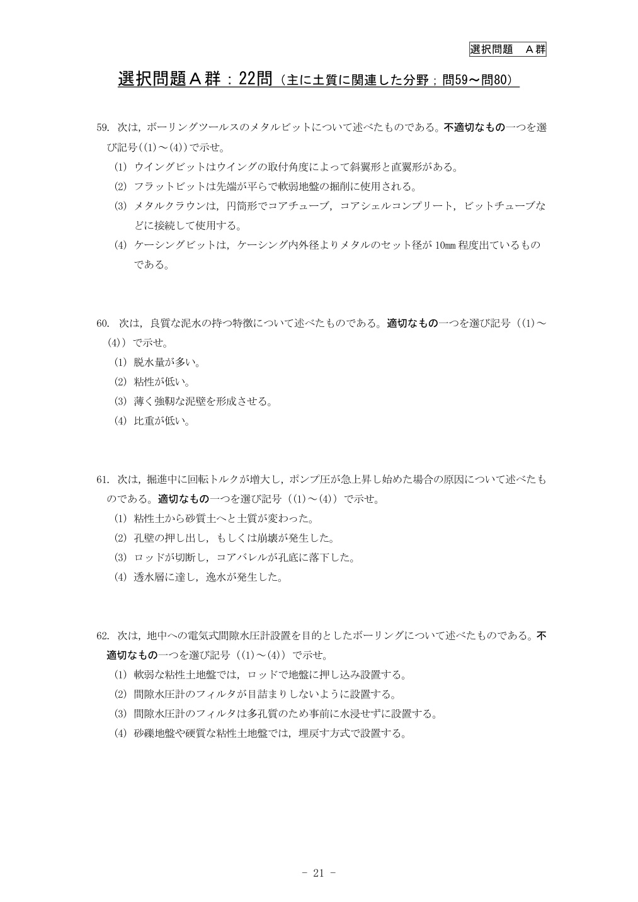
問60
A群（土質）
60. 次は，良質な泥水の持つ特徴について述べたものである。適切なもの一つを選び記号（(1)～
(4)）で示せ。
(1) 脱水量が多い。
(2) 粘性が低い。
(3) 薄く強靭な泥壁を形成させる。
(4) 比重が低い。
図表・イラスト確認用：PDF紙面（21ページ）を表示
問61
A群（土質）
61. 次は，掘進中に回転トルクが増大し，ポンプ圧が急上昇し始めた場合の原因について述べたも
のである。適切なもの一つを選び記号（(1)～(4)）で示せ。
(1) 粘性土から砂質土へと土質が変わった。
(2) 孔壁の押し出し，もしくは崩壊が発生した。
(3) ロッドが切断し，コアバレルが孔底に落下した。
(4) 透水層に達し，逸水が発生した。
図表・イラスト確認用：PDF紙面（21ページ）を表示
問62
A群（土質）
62. 次は，地中への電気式間隙水圧計設置を目的としたボーリングについて述べたものである。不
適切なもの一つを選び記号（(1)～(4)）で示せ。
(1) 軟弱な粘性土地盤では，ロッドで地盤に押し込み設置する。
(2) 間隙水圧計のフィルタが目詰まりしないように設置する。
(3) 間隙水圧計のフィルタは多孔質のため事前に水浸せずに設置する。
(4) 砂礫地盤や硬質な粘性土地盤では，埋戻す方式で設置する。
- 22 -
選択問題 Ａ群
図表・イラスト確認用：PDF紙面（21ページ）を表示
問63
A群（土質）
63. 次は，埋設物の有無確認のための作業について述べたものである。適切なもの一つを選び記号
（(1)～(4)）で示せ。
(1) 探針棒による探査は損傷の恐れがあるため埋設物の有無確認では実施されない。
(2) 埋設物図面情報でボーリング位置近傍に埋設物がない場合，試掘は実施しない。
(3) ハンドオーガー等で確認できる範囲以深は，プラスチック製ビットによる試掘も実施され
る。
(4) 全ての請負業者賠償責任保険は埋設物損傷事故には適用されない。
図表・イラスト確認用：PDF紙面（22ページ）を表示
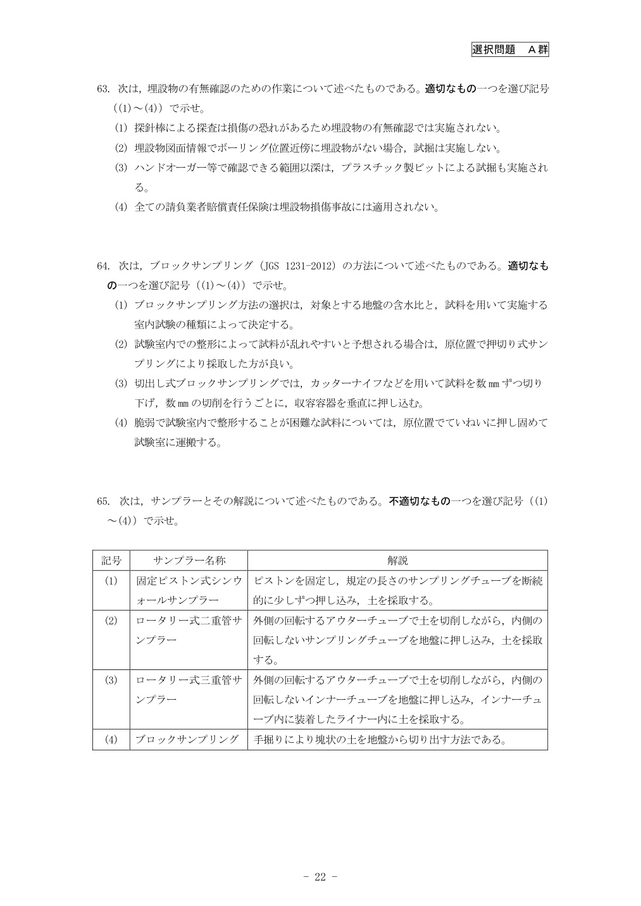
問64
A群（土質）
64. 次は，ブロックサンプリング（JGS 1231-2012）の方法について述べたものである。適切なも
の一つを選び記号（(1)～(4)）で示せ。
(1) ブロックサンプリング方法の選択は，対象とする地盤の含水比と，試料を用いて実施する
室内試験の種類によって決定する。
(2) 試験室内での整形によって試料が乱れやすいと予想される場合は，原位置で押切り式サン
プリングにより採取した方が良い。
(3) 切出し式ブロックサンプリングでは，カッターナイフなどを用いて試料を数mm ずつ切り
下げ，数mm の切削を行うごとに，収容容器を垂直に押し込む。
(4) 脆弱で試験室内で整形することが困難な試料については，原位置でていねいに押し固めて
試験室に運搬する。
図表・イラスト確認用：PDF紙面（22ページ）を表示
問65
A群（土質）
65. 次は，サンプラーとその解説について述べたものである。不適切なもの一つを選び記号（(1)
～(4)）で示せ。
記号
サンプラー名称
解説
(1)
固定ピストン式シンウ
ォールサンプラー
ピストンを固定し，規定の長さのサンプリングチューブを断続
的に少しずつ押し込み，土を採取する。
(2)
ロータリー式二重管サ
ンプラー
外側の回転するアウターチューブで土を切削しながら，内側の
回転しないサンプリングチューブを地盤に押し込み，土を採取
する。
(3)
ロータリー式三重管サ
ンプラー
外側の回転するアウターチューブで土を切削しながら，内側の
回転しないインナーチューブを地盤に押し込み，インナーチュ
ーブ内に装着したライナー内に土を採取する。
(4)
ブロックサンプリング
手掘りにより塊状の土を地盤から切り出す方法である。
- 23 -
選択問題 Ａ群
図表・イラスト確認用：PDF紙面（22ページ）を表示
問66
A群（土質）
66. 次は，固定ピストン式シンウォールサンプラーで採取した試料について述べたものである。不
適切なもの一つを選び記号（(1)～(4)）で示せ。
(1) 採取した試料の品質評価として，試料の温度変化を考慮しなくてよい。
(2) 採取した試料のシールは，含水比変化や空気と触れることによる酸化・変質を防ぐ目的で
行う。
(3) 採取した試料にカッティングスがある場合は，カッティングスを取り除いた長さを測定し
記録する。
(4) 採取した試料は，現場に放置しないで速やかに試験室に運搬する。
図表・イラスト確認用：PDF紙面（23ページ）を表示
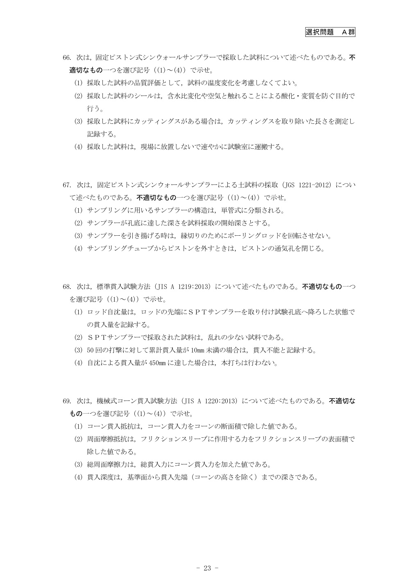
問67
A群（土質）
67. 次は，固定ピストン式シンウォールサンプラーによる土試料の採取（JGS 1221-2012）につい
て述べたものである。不適切なもの一つを選び記号（(1)～(4)）で示せ。
(1) サンプリングに用いるサンプラーの構造は，単管式に分類される。
(2) サンプラーが孔底に達した深さを試料採取の開始深さとする。
(3) サンプラーを引き揚げる時は，縁切りのためにボーリングロッドを回転させない。
(4) サンプリングチューブからピストンを外すときは，ピストンの通気孔を閉じる。
図表・イラスト確認用：PDF紙面（23ページ）を表示
問68
A群（土質）
68. 次は，標準貫入試験方法（JIS A 1219:2013）について述べたものである。不適切なもの一つ
を選び記号（(1)～(4)）で示せ。
(1) ロッド自沈量は，ロッドの先端にＳＰＴサンプラーを取り付け試験孔底へ降ろした状態で
の貫入量を記録する。
(2) ＳＰＴサンプラーで採取された試料は，乱れの少ない試料である。
(3) 50 回の打撃に対して累計貫入量が10mm 未満の場合は，貫入不能と記録する。
(4) 自沈による貫入量が450mm に達した場合は，本打ちは行わない。
図表・イラスト確認用：PDF紙面（23ページ）を表示
問69
A群（土質）
69. 次は，機械式コーン貫入試験方法（JIS A 1220:2013）について述べたものである。不適切な
もの一つを選び記号（(1)～(4)）で示せ。
(1) コーン貫入抵抗は，コーン貫入力をコーンの断面積で除した値である。
(2) 周面摩擦抵抗は，フリクションスリーブに作用する力をフリクションスリーブの表面積で
除した値である。
(3) 総周面摩擦力は，総貫入力にコーン貫入力を加えた値である。
(4) 貫入深度は，基準面から貫入先端（コーンの高さを除く）までの深さである。
- 24 -
選択問題 Ａ群
図表・イラスト確認用：PDF紙面（23ページ）を表示
問70
A群（土質）
70. 次は,単孔を利用した透水試験方法（JGS1314-2012）について述べたものである。不適切なも
の一つを選び記号（(1)～(4)）で示せ。
(1) 試験は，地下水面より下方の飽和した地盤を対象とする。
(2) 試験区間の長さＬと試験区間の孔径Ｄの比Ｌ/Ｄは４以上とする。
(3) 非定常法は，測定用パイプ内の水位を低下または上昇させ，測定用パイプ内の水位が一定
となったときの流量を測定する。
(4) 定常法は，非定常法による試験が困難な透水性の高い地盤に適している。
図表・イラスト確認用：PDF紙面（24ページ）を表示
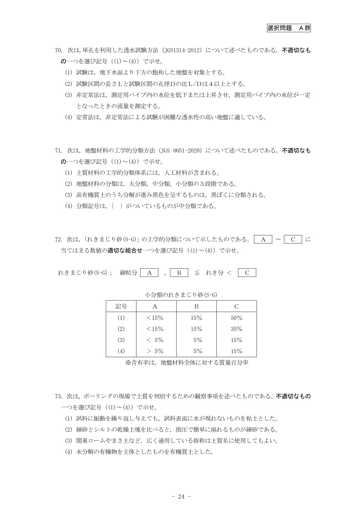
問71
A群（土質）
71. 次は，地盤材料の工学的分類方法（JGS 0051-2020）について述べたものである。不適切なも
の一つを選び記号（(1)～(4)）で示せ。
(1) 土質材料の工学的分類体系には，人工材料が含まれる。
(2) 地盤材料の分類は，大分類，中分類，小分類の３段階である。
(3) 高有機質土のうち分解が進み黒色を呈するものは，黒ぼくに分類される。
(4) 分類記号は，｛ ｝がついているものが中分類である。
図表・イラスト確認用：PDF紙面（24ページ）を表示
問72
A群（土質）
72. 次は，「れきまじり砂(S-G)」の工学的分類について示したものである。 Ａ ～ Ｃ に
当てはまる数値の適切な組合せ一つを選び記号（(1)～(4)）で示せ。
れきまじり砂(S-G)； 細粒分 Ａ ， Ｂ ≦ れき分 ＜ Ｃ
小分類のれきまじり砂(S-G)
記号
Ａ
Ｂ
Ｃ
(1)
(2)
(3)
(4)
＜15％
＜15％
＜ 5％
＞ 5％
15％
15％
5％
5％
50％
35％
15％
15％
※含有率は，地盤材料全体に対する質量百分率
図表・イラスト確認用：PDF紙面（24ページ）を表示
問73
A群（土質）
73. 次は，ボーリングの現場で土質を判別するための観察事項を述べたものである。不適切なもの
一つを選び記号（(1)～(4)）で示せ。
(1) 試料に振動を繰り返し与えても，試料表面に水が現れないものを粘土とした。
(2) 細砂とシルトの乾燥土塊を比べると，指圧で簡単に崩れるものが細砂である。
(3) 関東ロームやまさ土など，広く通用している俗称は土質名に使用してもよい。
(4) 未分解の有機物を主体としたものを有機質土とした。
- 25 -
選択問題 Ａ群
図表・イラスト確認用：PDF紙面（24ページ）を表示
問74
A群（土質）
74. 下表は，沖積層と洪積層の色調の代表例を示したものである。 Ａ ～ Ｄ に当てはま
る語句の適切な組合せ一つを選び記号（(1)～(4)）で示せ。
図表・イラスト確認用：PDF紙面（25ページ）を表示
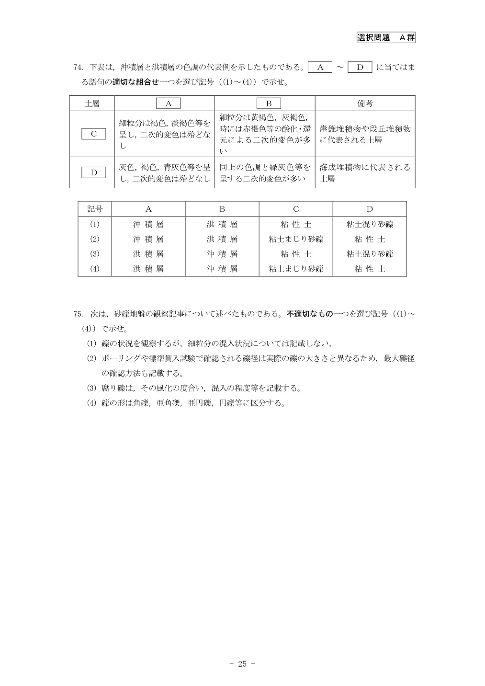
問75
A群（土質）
75. 次は，砂礫地盤の観察記事について述べたものである。不適切なもの一つを選び記号（(1)～
(4)）で示せ。
(1) 礫の状況を観察するが，細粒分の混入状況については記載しない。
(2) ボーリングや標準貫入試験で確認される礫径は実際の礫の大きさと異なるため，最大礫径
の確認方法も記載する。
(3) 腐り礫は，その風化の度合い，混入の程度等を記載する。
(4) 礫の形は角礫，亜角礫，亜円礫，円礫等に区分する。
土層
Ａ
Ｂ
備考
Ｃ
細粒分は褐色，淡褐色等を
呈し，二次的変色は殆どな
し
細粒分は黄褐色，灰褐色，
時には赤褐色等の酸化・還
元による二次的変色が多
い
崖錐堆積物や段丘堆積物
に代表される土層
Ｄ
灰色，褐色，青灰色等を呈
し，二次的変色は殆どなし
同上の色調と緑灰色等を
呈する二次的変色が多い
海成堆積物に代表される
土層
記号
Ａ
Ｂ
Ｃ
Ｄ
(1)
(2)
(3)
(4)
沖積層
沖積層
洪積層
洪積層
洪積層
洪積層
沖積層
沖積層
粘性土
粘土まじり砂礫
粘性土
粘土まじり砂礫
粘土混り砂礫
粘性土
粘土混り砂礫
粘性土
- 26 -
選択問題 Ａ群
図表・イラスト確認用：PDF紙面（25ページ）を表示
問76
A群（土質）
76. 下表は，ボーリング時の現象と，設計・施工段階で予想される事項について示したものである。
空欄Ａ～Ｄに当てはまるボーリング時の現象の適切な組合せ一つを選び記号（(1)～(4)）で示せ。
図表・イラスト確認用：PDF紙面（26ページ）を表示
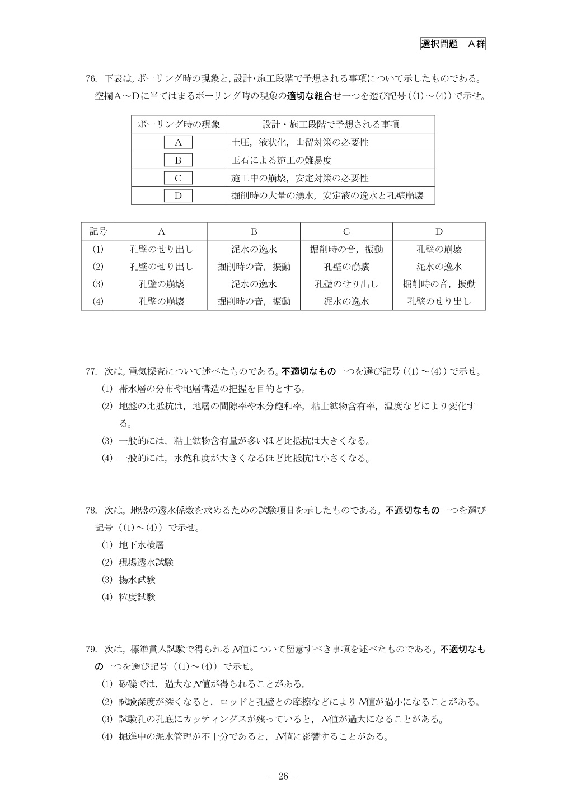
問77
A群（土質）
77. 次は，電気探査について述べたものである。不適切なもの一つを選び記号（(1)～(4)）で示せ。
(1) 帯水層の分布や地層構造の把握を目的とする。
(2) 地盤の比抵抗は，地層の間隙率や水分飽和率，粘土鉱物含有率，温度などにより変化す
る。
(3) 一般的には，粘土鉱物含有量が多いほど比抵抗は大きくなる。
(4) 一般的には，水飽和度が大きくなるほど比抵抗は小さくなる。
図表・イラスト確認用：PDF紙面（26ページ）を表示
問78
A群（土質）
78. 次は，地盤の透水係数を求めるための試験項目を示したものである。不適切なもの一つを選び
記号（(1)～(4)）で示せ。
(1) 地下水検層
(2) 現場透水試験
(3) 揚水試験
(4) 粒度試験
図表・イラスト確認用：PDF紙面（26ページ）を表示
問79
A群（土質）
79. 次は，標準貫入試験で得られるＮ値について留意すべき事項を述べたものである。不適切なも
の一つを選び記号（(1)～(4)）で示せ。
(1) 砂礫では，過大なＮ値が得られることがある。
(2) 試験深度が深くなると，ロッドと孔壁との摩擦などによりＮ値が過小になることがある。
(3) 試験孔の孔底にカッティングスが残っていると，Ｎ値が過大になることがある。
(4) 掘進中の泥水管理が不十分であると，Ｎ値に影響することがある。
ボーリング時の現象
設計・施工段階で予想される事項
Ａ
土圧，液状化，山留対策の必要性
Ｂ
玉石による施工の難易度
Ｃ
施工中の崩壊，安定対策の必要性
Ｄ
掘削時の大量の湧水，安定液の逸水と孔壁崩壊
記号
Ａ
Ｂ
Ｃ
Ｄ
(1)
(2)
(3)
(4)
孔壁のせり出し
孔壁のせり出し
孔壁の崩壊
孔壁の崩壊
泥水の逸水
掘削時の音，振動
泥水の逸水
掘削時の音，振動
掘削時の音，振動
孔壁の崩壊
孔壁のせり出し
泥水の逸水
孔壁の崩壊
泥水の逸水
掘削時の音，振動
孔壁のせり出し
- 27 -
図表・イラスト確認用：PDF紙面（26ページ）を表示
問80
A群（土質）
80. 次は，土の物理的性質を求める土質試験を示したものである。不適切なもの一つを選び記号
（（1）～（4））で示せ。
(1) 土の一軸圧縮試験（JIS A 1216：2020）
(2) 土粒子の密度試験（JIS A 1202：2020）
(3) 土の湿潤密度試験（JIS A 1225：2020）
(4) 土の含水比試験（JIS A 1203：2020）
- 28 -
選択問題 Ｂ群
選択問題Ｂ群：22問（主に岩盤に関連した分野；問81～問102）
図表・イラスト確認用：PDF紙面（27ページ）を表示
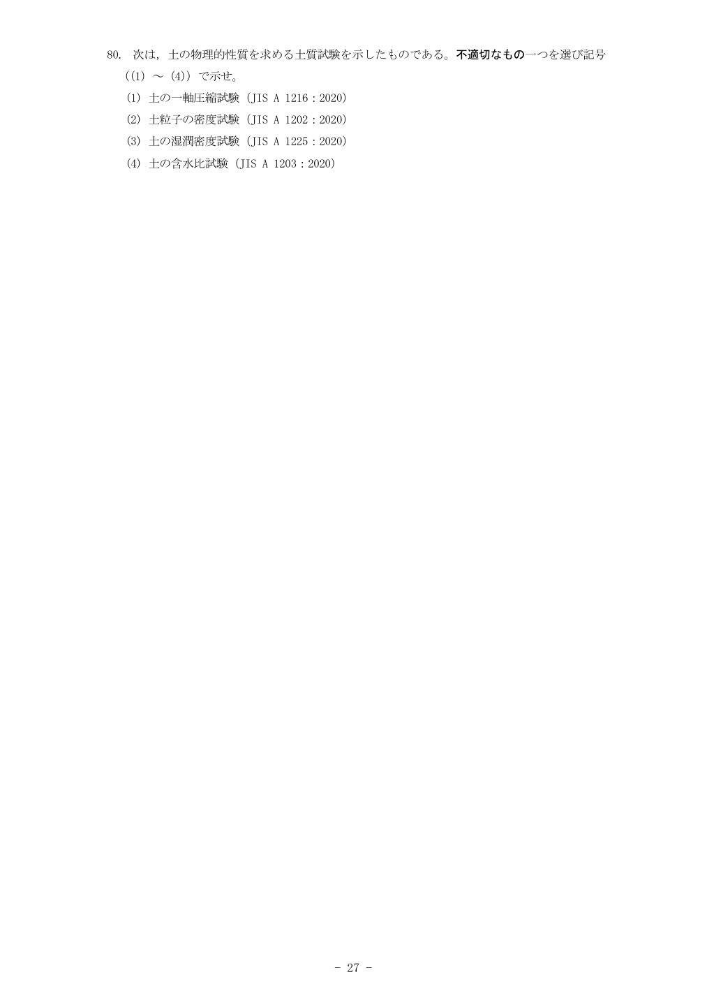
問81
B群（岩盤）
81. 次は，孔内に使用するケーシングの目的を示したものである。不適切なもの一つを選び記号
((1)～(4))で示せ。
(1) 孔壁の崩壊防止
(2) 地下水や温泉に対する汚染防止
(3) 逸水層，出水層，崩壊層などの遮断
(4) ロッドなどの掘具に対する摩擦抵抗の増大
図表・イラスト確認用：PDF紙面（28ページ）を表示
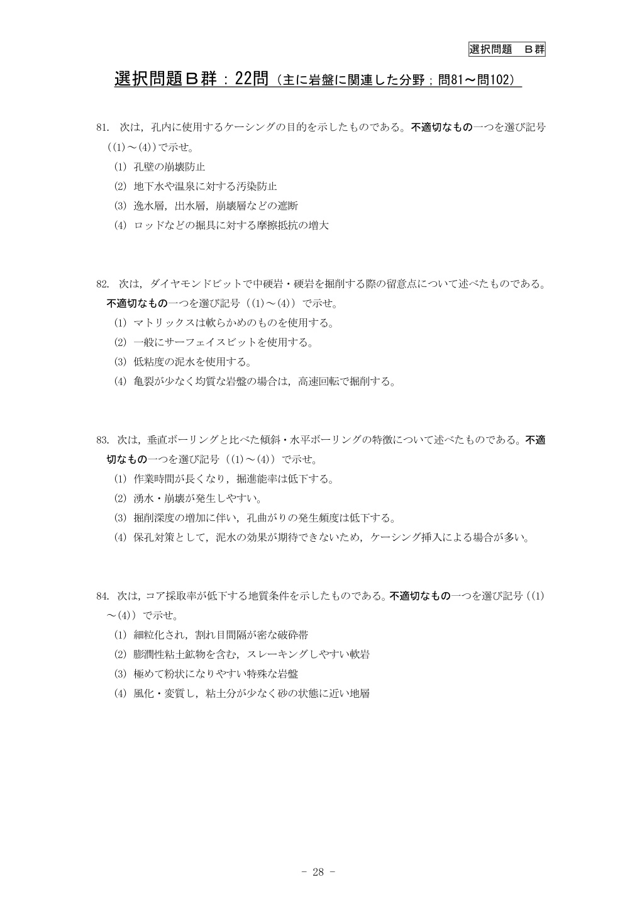
問82
B群（岩盤）
82. 次は，ダイヤモンドビットで中硬岩・硬岩を掘削する際の留意点について述べたものである。
不適切なもの一つを選び記号（(1)～(4)）で示せ。
(1) マトリックスは軟らかめのものを使用する。
(2) 一般にサーフェイスビットを使用する。
(3) 低粘度の泥水を使用する。
(4) 亀裂が少なく均質な岩盤の場合は，高速回転で掘削する。
図表・イラスト確認用：PDF紙面（28ページ）を表示
問83
B群（岩盤）
83. 次は，垂直ボーリングと比べた傾斜・水平ボーリングの特徴について述べたものである。不適
切なもの一つを選び記号（(1)～(4)）で示せ。
(1) 作業時間が長くなり，掘進能率は低下する。
(2) 湧水・崩壊が発生しやすい。
(3) 掘削深度の増加に伴い，孔曲がりの発生頻度は低下する。
(4) 保孔対策として，泥水の効果が期待できないため，ケーシング挿入による場合が多い。
図表・イラスト確認用：PDF紙面（28ページ）を表示
問84
B群（岩盤）
84. 次は，コア採取率が低下する地質条件を示したものである。不適切なもの一つを選び記号（(1)
～(4)）で示せ。
(1) 細粒化され，割れ目間隔が密な破砕帯
(2) 膨潤性粘土鉱物を含む，スレーキングしやすい軟岩
(3) 極めて粉状になりやすい特殊な岩盤
(4) 風化・変質し，粘土分が少なく砂の状態に近い地層
- 29 -
選択問題 Ｂ群
図表・イラスト確認用：PDF紙面（28ページ）を表示
問85
B群（岩盤）
85. 次は，ケーシングの挿入について述べたものである。不適切なもの一つを選び記号（(1)～(4)）
で示せ。
(1) ケーシングが挿入されていると，全ての検層が安全に行うことができる。
(2) ケーシング挿入後，循環水の使用量が少なくなる。
(3) 崩壊・逸水・湧水などの孔内条件改善のために行われるが，その効果はセメンティングよ
り良い。
(4) ケーシング挿入ごとに孔径は小さくなり，そのたびに掘削器具を変更しなければならな
い。
図表・イラスト確認用：PDF紙面（29ページ）を表示
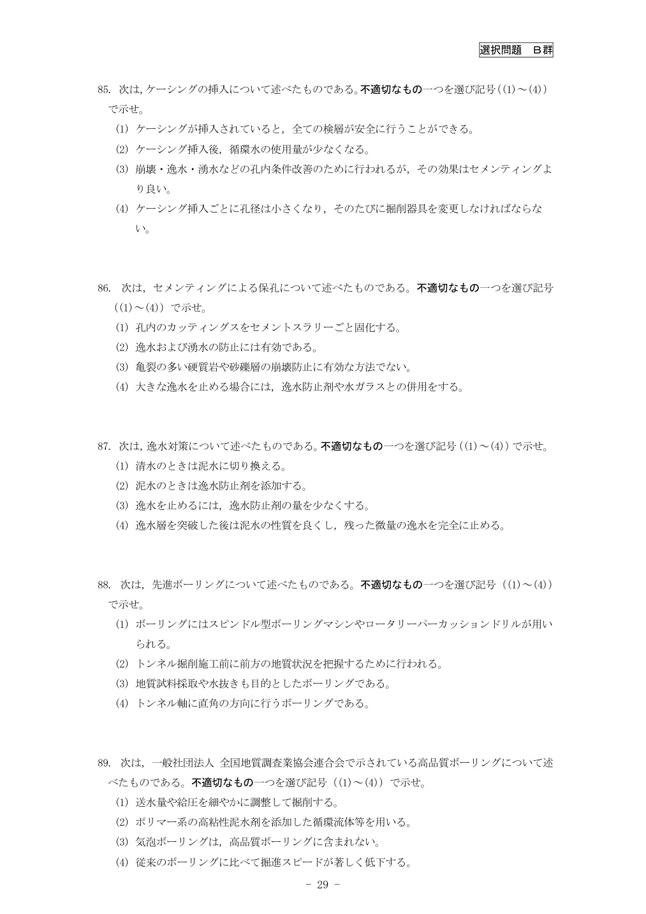
問86
B群（岩盤）
86. 次は，セメンティングによる保孔について述べたものである。不適切なもの一つを選び記号
（(1)～(4)）で示せ。
(1) 孔内のカッティングスをセメントスラリーごと固化する。
(2) 逸水および湧水の防止には有効である。
(3) 亀裂の多い硬質岩や砂礫層の崩壊防止に有効な方法でない。
(4) 大きな逸水を止める場合には，逸水防止剤や水ガラスとの併用をする。
図表・イラスト確認用：PDF紙面（29ページ）を表示
問87
B群（岩盤）
87. 次は，逸水対策について述べたものである。不適切なもの一つを選び記号（(1)～(4)）で示せ。
(1) 清水のときは泥水に切り換える。
(2) 泥水のときは逸水防止剤を添加する。
(3) 逸水を止めるには，逸水防止剤の量を少なくする。
(4) 逸水層を突破した後は泥水の性質を良くし，残った微量の逸水を完全に止める。
図表・イラスト確認用：PDF紙面（29ページ）を表示
問88
B群（岩盤）
88. 次は，先進ボーリングについて述べたものである。不適切なもの一つを選び記号（(1)～(4)）
で示せ。
(1) ボーリングにはスピンドル型ボーリングマシンやロータリーパーカッションドリルが用い
られる。
(2) トンネル掘削施工前に前方の地質状況を把握するために行われる。
(3) 地質試料採取や水抜きも目的としたボーリングである。
(4) トンネル軸に直角の方向に行うボーリングである。
図表・イラスト確認用：PDF紙面（29ページ）を表示
問89
B群（岩盤）
89. 次は，一般社団法人 全国地質調査業協会連合会で示されている高品質ボーリングについて述
べたものである。不適切なもの一つを選び記号（(1)～(4)）で示せ。
(1) 送水量や給圧を細やかに調整して掘削する。
(2) ポリマー系の高粘性泥水剤を添加した循環流体等を用いる。
(3) 気泡ボーリングは，高品質ボーリングに含まれない。
(4) 従来のボーリングに比べて掘進スピードが著しく低下する。
- 30 -
選択問題 Ｂ群
図表・イラスト確認用：PDF紙面（29ページ）を表示
問90
B群（岩盤）
90. 次は，地盤の物性を評価するためのプレッシャーメータ試験方法（JGS 3531-2012）について
述べたものである。不適切なもの一つを選び記号（(1)～(4)）で示せ。
(1) 試験装置はプレボーリング式とセルフボーリング式がある。
(2) 加圧部は1 室型と3 室型がある。
(3) 載荷は段階的に加圧し，孔壁圧力保持時間は1 分間を標準とする。
(4) 載荷の制御は圧力制御または変位制御により行う。
図表・イラスト確認用：PDF紙面（30ページ）を表示
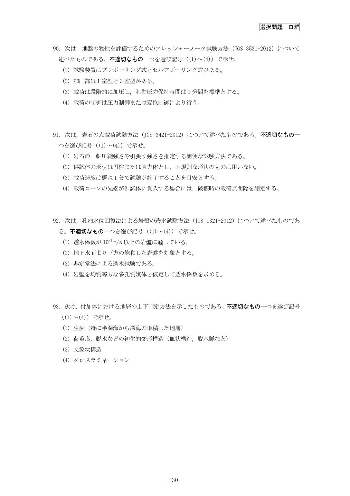
問91
B群（岩盤）
91. 次は，岩石の点載荷試験方法（JGS 3421-2012）について述べたものである。不適切なもの一
つを選び記号（(1)～(4)）で示せ。
(1) 岩石の一軸圧縮強さや引張り強さを推定する簡便な試験方法である。
(2) 供試体の形状は円柱または直方体とし，不規則な形状のものは用いない。
(3) 載荷速度は概ね1 分で試験が終了することを目安とする。
(4) 載荷コーンの先端が供試体に貫入する場合には，破壊時の載荷点間隔を測定する。
図表・イラスト確認用：PDF紙面（30ページ）を表示
問92
B群（岩盤）
92. 次は，孔内水位回復法による岩盤の透水試験方法（JGS 1321-2012）について述べたものであ
る。不適切なもの一つを選び記号（(1)～(4)）で示せ。
(1) 透水係数が10-3 m/s 以上の岩盤に適している。
(2) 地下水面より下方の飽和した岩盤を対象とする。
(3) 非定常法による透水試験である。
(4) 岩盤を均質等方な多孔質媒体と仮定して透水係数を求める。
図表・イラスト確認用：PDF紙面（30ページ）を表示
問93
B群（岩盤）
93. 次は，付加体における地層の上下判定方法を示したものである。不適切なもの一つを選び記号
（(1)～(4)）で示せ。
(1) 生痕（特に半深海から深海の堆積した地層）
(2) 荷重痕，脱水などの初生的変形構造（皿状構造，脱水脈など）
(3) 文象状構造
(4) クロスラミネーション
- 31 -
図表・イラスト確認用：PDF紙面（30ページ）を表示
問94
B群（岩盤）
94. 次は，岩盤分類について述べたものである。不適切なもの一つを選び記号（(1)～(4)）で示せ。
(1) Ｄ級岩盤は，造岩鉱物および粒子は風化作用を受けて著しく軟質化し，岩質も著しく軟ら
かい。
(2) ＣＬ級岩盤は，造岩鉱物および粒子は風化作用を受けて軟質化し，岩質も軟らかい。
(3) ＣＭ級岩盤は，造岩鉱物および粒子は石英を除けば風化作用を受けて多少軟質化し，岩質
も多少軟らかい。
(4) ＣＨ級岩盤は，造岩鉱物および粒子は部分的には多少風化，変質が見られるが，岩質は堅
硬で節理はない。
図表・イラスト確認用：PDF紙面（31ページ）を表示
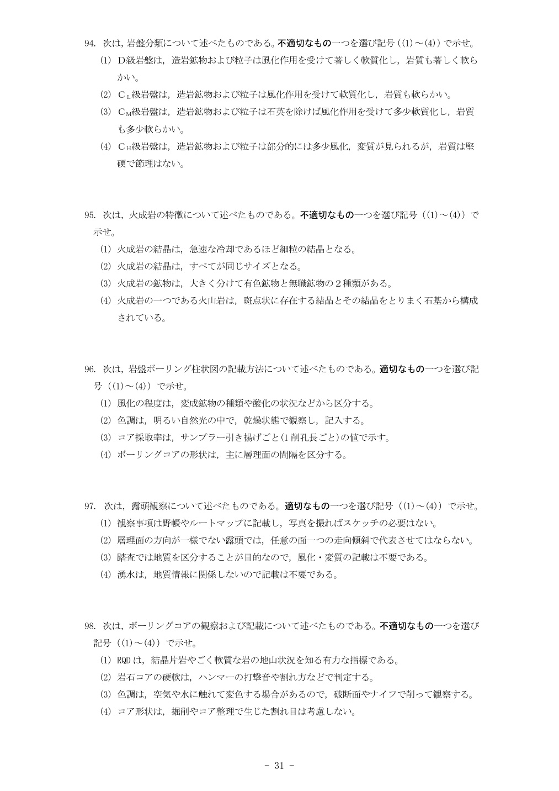
問95
B群（岩盤）
95. 次は，火成岩の特徴について述べたものである。不適切なもの一つを選び記号（(1)～(4)）で
示せ。
(1) 火成岩の結晶は，急速な冷却であるほど細粒の結晶となる。
(2) 火成岩の結晶は，すべてが同じサイズとなる。
(3) 火成岩の鉱物は，大きく分けて有色鉱物と無職鉱物の２種類がある。
(4) 火成岩の一つである火山岩は，斑点状に存在する結晶とその結晶をとりまく石基から構成
されている。
図表・イラスト確認用：PDF紙面（31ページ）を表示
問96
B群（岩盤）
96. 次は，岩盤ボーリング柱状図の記載方法について述べたものである。適切なもの一つを選び記
号（(1)～(4)）で示せ。
(1) 風化の程度は，変成鉱物の種類や酸化の状況などから区分する。
(2) 色調は，明るい自然光の中で，乾燥状態で観察し，記入する。
(3) コア採取率は，サンプラー引き揚げごと(1 削孔長ごと)の値で示す。
(4) ボーリングコアの形状は，主に層理面の間隔を区分する。
図表・イラスト確認用：PDF紙面（31ページ）を表示
問97
B群（岩盤）
97. 次は，露頭観察について述べたものである。適切なもの一つを選び記号（(1)～(4)）で示せ。
(1) 観察事項は野帳やルートマップに記載し，写真を撮ればスケッチの必要はない。
(2) 層理面の方向が一様でない露頭では，任意の面一つの走向傾斜で代表させてはならない。
(3) 踏査では地質を区分することが目的なので，風化・変質の記載は不要である。
(4) 湧水は，地質情報に関係しないので記載は不要である。
図表・イラスト確認用：PDF紙面（31ページ）を表示
問98
B群（岩盤）
98. 次は，ボーリングコアの観察および記載について述べたものである。不適切なもの一つを選び
記号（(1)～(4)）で示せ。
(1) RQD は，結晶片岩やごく軟質な岩の地山状況を知る有力な指標である。
(2) 岩石コアの硬軟は，ハンマーの打撃音や割れ方などで判定する。
(3) 色調は，空気や水に触れて変色する場合があるので，破断面やナイフで削って観察する。
(4) コア形状は，掘削やコア整理で生じた割れ目は考慮しない。
- 32 -
選択問題 Ｂ群
図表・イラスト確認用：PDF紙面（31ページ）を表示
問99
B群（岩盤）
99. 下図は，ある地層面の走向をクリノメーターで計測した結果を示したものである。この結果を
地質図に記載する場合，正しい走向の表現として適切なもの一つを選び記号（(1)～(4)）で示せ。
なお，計測値点における偏角は西偏7 度である。
(1) N45˚W
(2) N45˚E
(3) N52˚W
(4) N38˚E
図表・イラスト確認用：PDF紙面（32ページ）を表示
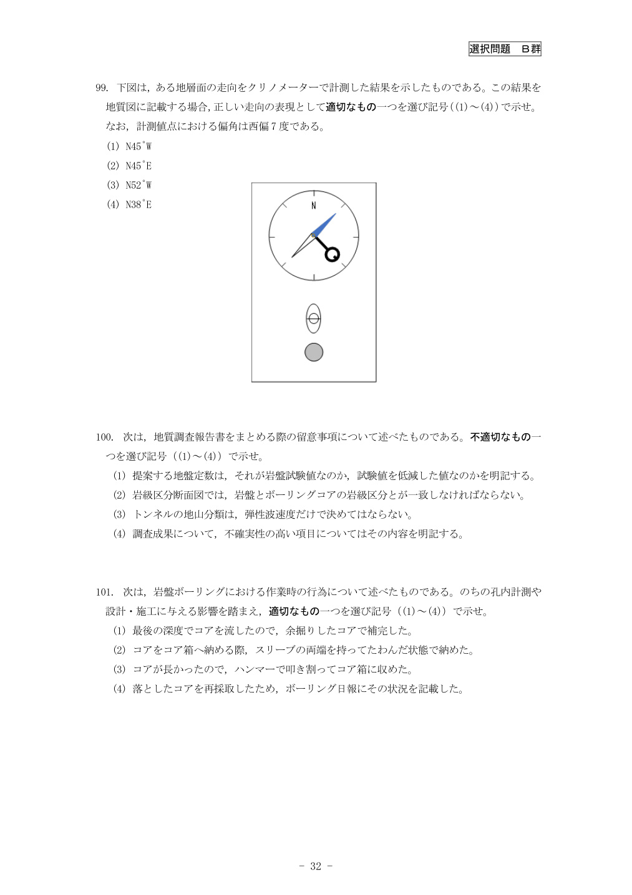
問100
B群（岩盤）
100. 次は，地質調査報告書をまとめる際の留意事項について述べたものである。不適切なもの一
つを選び記号（(1)～(4)）で示せ。
(1) 提案する地盤定数は，それが岩盤試験値なのか，試験値を低減した値なのかを明記する。
(2) 岩級区分断面図では，岩盤とボーリングコアの岩級区分とが一致しなければならない。
(3) トンネルの地山分類は，弾性波速度だけで決めてはならない。
(4) 調査成果について，不確実性の高い項目についてはその内容を明記する。
図表・イラスト確認用：PDF紙面（32ページ）を表示
問101
B群（岩盤）
101. 次は，岩盤ボーリングにおける作業時の行為について述べたものである。のちの孔内計測や
設計・施工に与える影響を踏まえ，適切なもの一つを選び記号（(1)～(4)）で示せ。
(1) 最後の深度でコアを流したので，余掘りしたコアで補完した。
(2) コアをコア箱へ納める際，スリーブの両端を持ってたわんだ状態で納めた。
(3) コアが長かったので，ハンマーで叩き割ってコア箱に収めた。
(4) 落としたコアを再採取したため，ボーリング日報にその状況を記載した。
- 33 -
選択問題 Ｂ群
図表・イラスト確認用：PDF紙面（32ページ）を表示
問102
B群（岩盤）
102. 次は，岩石の吸水膨張試験方法（JGS 2121-2020）について述べたものである。適切なものを
一つ選び記号（（1）～（4））で示せ。
(1) 試料の採取は，採取地点の岩質や地質状況にかかわらず代表試料のみでよい。
(2) 採取した試料は試験実施まで含水比や形状を変化させないように保管する。
(3) 試験は中硬岩のみ適用される。
(4) 供試体の形状は不定形とする。
- 34 -
必須問題
Ⅶ．記述式問題 (2問)
以下の問いに対する解答を答案用紙（その２）に記述せよ。
第１問
次に記述するサンプラーより2 つを選び，それぞれについて，①選択したサンプラー名，②
必要なボーリング孔径，③概略の適応土質，を記述せよ。
・固定ピストン式シンウォール サンプラー
・デニソン型 サンプラー(ロータリー式二重管サンプラー)
・トリプル サンプラー(ロータリー式三重管サンプラー)
・ロータリー型スリーブ内蔵二重管サンプラー
第２問
ボーリング野帳（日報）に記入する観察記録について，下表（表-１）の空欄に，あなたが普
段書いている観察記事の一例を記入せよ。なお，以下に示す[表の説明等]を参考のこと。
[表の説明等]
●観察項目は，(A) 地質構造，(B) 礫，(C) 混入物，(D) 掘進中の状況，(E) その他，の５
項目となる。
●文の組立て順序は，(1)どこに，(2)どのような，(3)なにが，(4)どんな風に，(5)どの程度，
(6)どうなっている，となる。
●記入に当たっては「(A) 地質構造」および「（E）その他」での記入例を参考のこと。
●観察記録は，丘陵地・台地・沖積低地上における地質・土質状況を想定のこと。
表-1 ボーリング野帳（日報）観察記事
観察項目
順序
(A)地質構造
(B)礫
(C)混入物
(D)掘進中の
状況
(E)その他
(1)どこに
17m以深
上部は
(2)どのような
5cm位の厚さの
(3)なにが
細砂層が
水気が
(4)どんな風に
薄層状に
(5)どの程度
かなり繰返し
非常に
(6)どうなっている
挟まれている
多い
図表・イラスト確認用：PDF紙面（33ページ）を表示
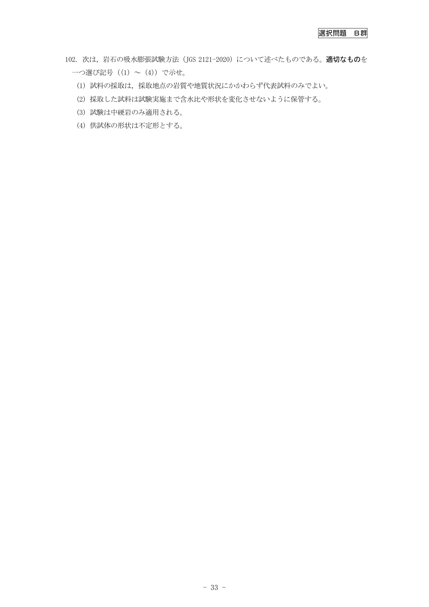